A business hotel's third floor at night. You come up the stairwell because the lift is out. Your room's card
reader is broken, the master key is in the linen closet, the corridor's lights won't stay on, and your flashlight is
dying. Someone is standing at the end of the corridor, and she doesn't like the light. The floor comes
ready-made (or you model it yourself in the scene builder), and you build the whole
game in Godot by hand: the Look plugin for the light, the weather and
the surfaces, and the starter scripts for the story, the sound and the scares; then the UI plugin's HUD and
quest markers, the devices plugin's laptop to order things on (they come in a parcel to your door), the
weapons plugin's double barrel, and made props that glow, steam and break. No Director.
about two hoursGodot 4.7the floor ready-made, or the scene builderthe HorrorStudio Look pluginthe UI, Devices and Weapons plugins36 starter scriptsthe sound shelf and the four moods
1What you'll make
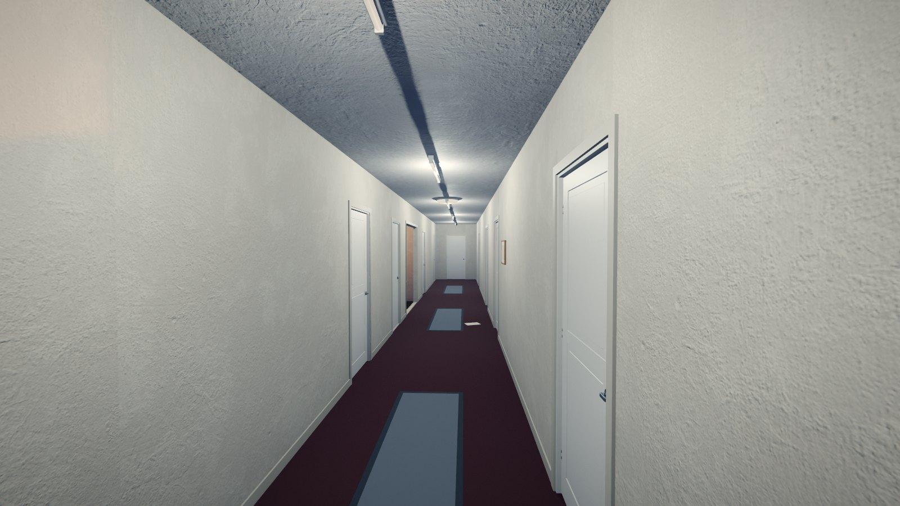
The third floor corridor, lit by the Look plugin's tubes.Her at the end of the corridor. She backs away from the beam.
It uses everything the studio has for a game built by hand:
The scene builder: rooms, two floors, a dog-leg stair, doors locked by a key, windows, furniture, lamps and
paint. The floor comes made, so this part is yours to skip: the ready-made floor.
The Look plugin: its look, a grade, light zones, flickering tubes, a dying bulb, rain on a window, a car's
lights crossing a room, a CRT's static, a real mirror, a wet floor and blood, a street lamp's shaft through a window,
water leaking down a wall into a puddle, leaves' shadows on a wall, her skin wet, the tape breaking up, and the air
itself: haze, dust that glints in the light, the fog rolling in, and your flashlight a beam in it.
The starter kit: a to-do list on screen, notes, keys and pickups, music by mood, a tone for each room, lights
that dim and come back or go out one by one, a flashlight on batteries, a character who backs off from the light, and
a jump scare with the hush before it; every sound with its room in it (Woohill's sound physics: the stairwell rings,
a knock behind a door is muffled), footsteps, your body under fear (a heartbeat, breathing, the world going dull,
the beam shaking), steps behind you, and her hunting by ear once it's dark (a corner to hide in, your breath held,
a chase if she sees you).
The UI plugin: the HUD's reticle, its keys and the pocket as a row of the things themselves, and quest
markers that come and go with the to-do list.
The devices plugin: a laptop whose green terminal is a shop, things for sale as files, a ? until they're
earned, and parcels left at your door that burst open into your hands.
The weapons plugin: the double barrel, two kinds of shell, a bulb shot out, a kettle and a mug of tea shot
to pieces, and her shot down into black ichor and smoke.
Made props: the prop generator's kettle with its LED and steam, a mug whose tea stays level, a candle's flame.
Every system in it lists them all, with what a game by hand can't do yet.
Every picture here is that game, drawn by Godot or the scene builder. python tools/godot/tutorial_v2.py --keep ~/Games/Room304_done
builds it exactly as these steps do, so you can open the finished one beside yours. It goes in a folder of its own,
emptied each time.
2Before you start
The floor is ready-made. You don't have to build the map. The studio has it already,
exported for Godot: Exports/interiors/hotel_floor/hotel_floor.glb, the set hotel_floor
exactly as §3 to §8 make it. Skip to §9 The project: its
two commands put the floor in your project as exports/interiors/hotel_floor/hotel_floor.glb, and everything
from there on is Godot. No scene builder, no desk server. §3 to §8 stay here for when you want to see how a floor is
made, or to make one of your own.
Godot 4.7 (the standard build).
The studio's desk server, only if you model the floor yourself (§3 to §8): python tools/director/serve.py, then
http://127.0.0.1:8780/builder.html. You can also use the dashboard's Scene builder tile (python dashboard.py).
Your first game is the short version of this. It's worth reading if Godot is new to you. Godot by hand
explains what's underneath (the export's folders, the settings, shipping).
The ready-made floor's set is set: hotel_floor in the scene builder's game list. Open it
to see how it's made, or to compare with yours.
Open the scene builder. In its game list pick + new set… and call it
my_hotel (hotel_floor is the ready-made one's). A set is a place designed before any game uses it, kept in Content/Studio/Sets/.
The plan is a top-down grid: one square is a metre, north is up, and rooms are rectangles you drag out.
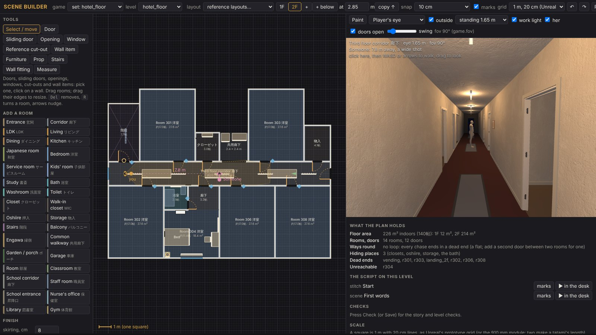
The third floor in the scene builder: the plan, and the corridor seen from the player's eye at 1.65 m.
Floors. The floors bar at the top has + (a floor above) and + below.
You need two: the second floor's landing at 0 m, where the player comes from, and the third floor at 2.85 m. The builder
counts from the lowest floor, so these show as 1F and 2F. Rooms go on the floor that's lit in the bar.
The corridor. From Add a room, drag a Corridor 18.4 m long
and 2 m deep, running east to west.
The guest rooms.Bedrooms 4.6 × 6 m along both sides: 301 and 303 north of the
corridor, 302, 306 and 308 south of it. Nobody goes into those, so untick their fixtures and set their
light off.
Room 304 is three rooms: a Bedroom (4.6 × 4), an entry (a Corridor, 2.6 × 2) and a Bath (2 × 2)
beside it. The entry and the bedroom have no wall between them: tick open on the side they share, in both.
A bath brings its own tub and tiled floor.
The rest: a Closet for the linen (2 × 2.4: closets get no ceiling light, so it's dark), a
vending corner (a Common walkway, 2.4 × 2.4), a Storage room, "Staff only". On the
lower floor, a Common walkway for the second floor's landing, right under the corridor's west end.
For each room, the inspector on the right sets its name, its floor (what the footsteps sound like:
carpet in the corridor and the rooms) and its tone, a quiet loop off the sound shelf. You'll set tones in
Godot in this tutorial; the field is there for games the desk exports.
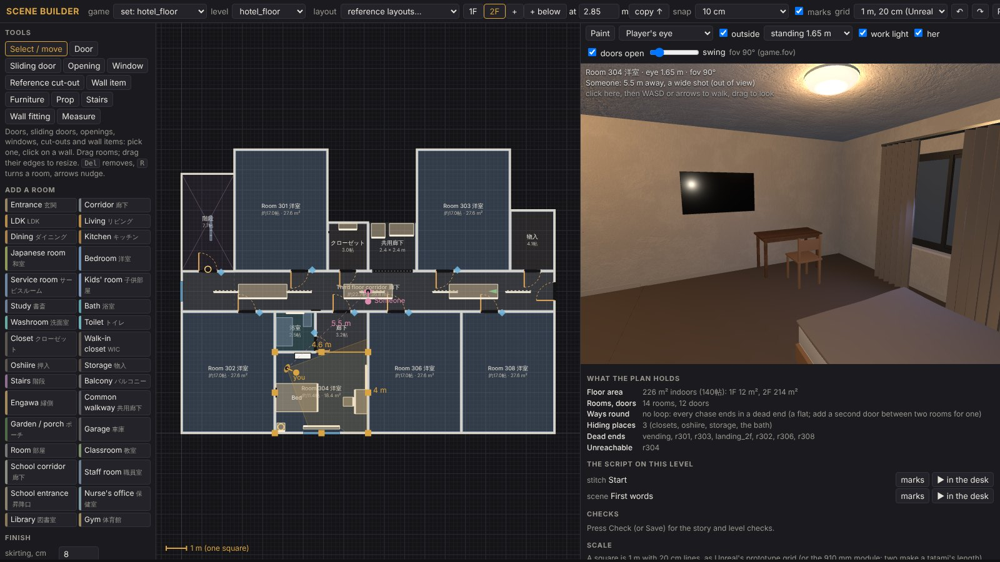
Room 304 picked. Its inspector shows its kind, size, floor, light and tone, and the view is inside it.
4The stairwell
A stairwell is one room the building's whole height. Add a Stairs room 2.6 × 4.8 m on the
lower floor, north of the second floor's landing, and give it a height of 5.45 m (both storeys: 2.85 + 2.6). In its inspector:
climbs north: the first flight goes up from the south end;
flights: a dog-leg (two flights a storey, a half landing between them);
stairs: apartment (concrete flights, a pipe rail).
The builder lays out the flights to the stair rules: each riser about 18 cm, landings at each floor. Drag the green
you marker onto the bottom landing, facing up the first flight. That's where the game starts.
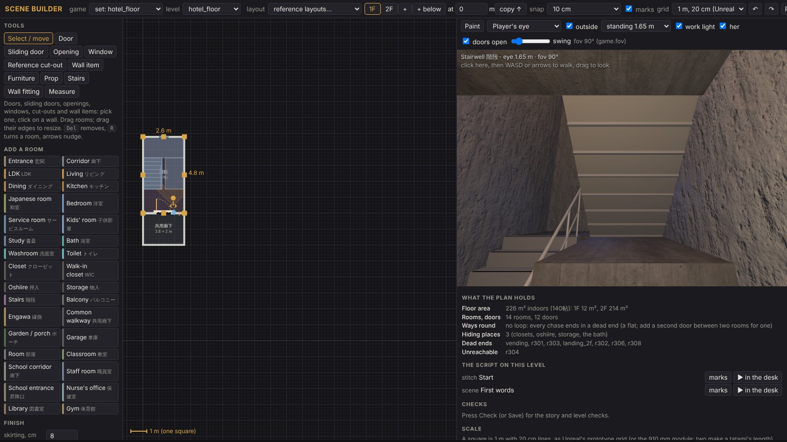
The lower floor: the stairwell's landing and the dog-leg's two flights.
5Doors, locks and windows
Pick the Door tool and click a wall two rooms share. Each guest room's door goes in the
corridor's wall, and so does the linen closet's. Put one between the corridor and the stairwell too: it lands on the
stairwell's top landing by itself, at the corridor's floor.
Locks. A door's inspector has locked by. For room 304 type key_304, the name of the key
you'll hide in the linen closet. For the rooms nobody enters, and the second floor's door the player came through, type
flag:never: never opens. The lock goes with the export, and the starter's door.gd keeps it.
An Opening 2 m wide between the corridor and the vending corner: no door, an arch.
With the Window tool, add a window at the corridor's west end (sill 0.9 m) and one in 304's
south wall (sill 0.7 m, 1.8 m wide). A Door on the corridor's east wall, an outer wall, is the
fire exit.
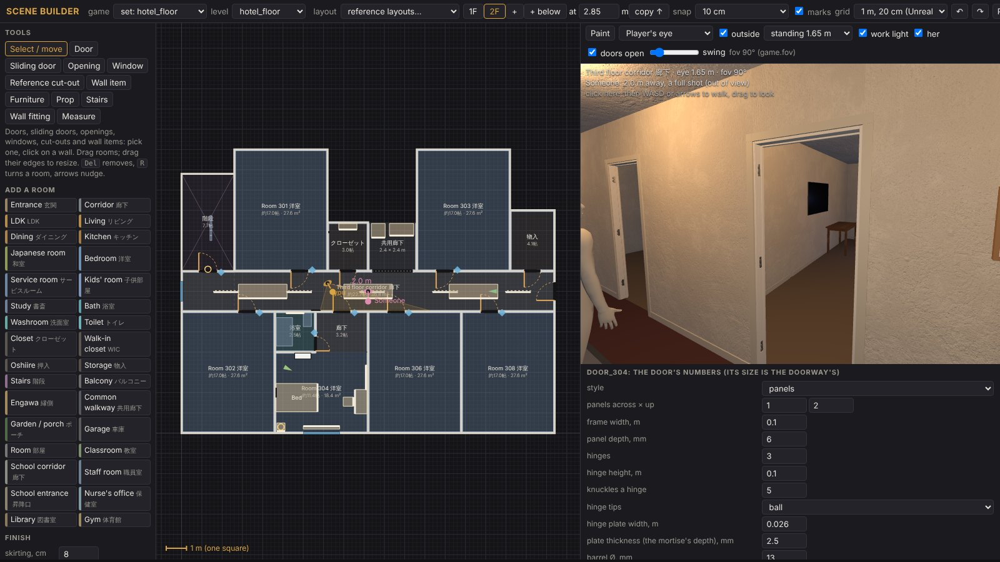
304's door picked: locked by key_304. The red doors on the plan are locked.
6Furniture and lights
The Furniture tool places the kit's things at their real sizes. Pick one in its list and click
in a room. R turns it, and dragging moves it.
Where
What (the kit's presets)
304
bed_double on the west wall, desk and a dining_chair on the east wall, tv_55 on the wall above the desk (1.15 m up), a floor_lamp in the corner, curtain_blackout at the window
304's bath
vanity_mirror on the north wall (1 m up), a toilet (a Prop block, white)
Linen closet
a bookshelf on the back wall: its shelves are where the key goes
Vending corner
a fridge (the drinks) and a desk as a counter
Corridor
three runner rugs, and five tube_battens on the ceiling with a lamp ticked (4200 K)
Stairwell
a tube_batten lamp over each landing
A lamp in the scene builder is a light in the export, at the fitting. Here you'll light the floor yourself with the Look
plugin, so the lamps mostly mark where the lights go.
7Paint
Paint over the 3D view is a paint bucket. Pick a PBR set or a colour below it, tune it, and
click a surface:
the corridor's and the rooms' walls: Plaster001 tinted beige, for a hotel's wallpaper;
the corridor's carpet a dark red (#4b2a2c), the rooms' a dusty brown (#6a5a4a);
the bath's walls and ceiling: white_plastic (a unit bath);
the stairwell: Concrete006, its flights Concrete029.
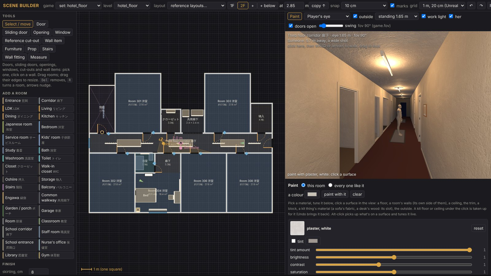
The paint bucket with a plaster set picked.
Then Save to story. The stats under the view say what the plan holds. 304 is "unreachable"
because it's locked by its key, which is what you want, and the stairwell and the guest rooms are dead ends.
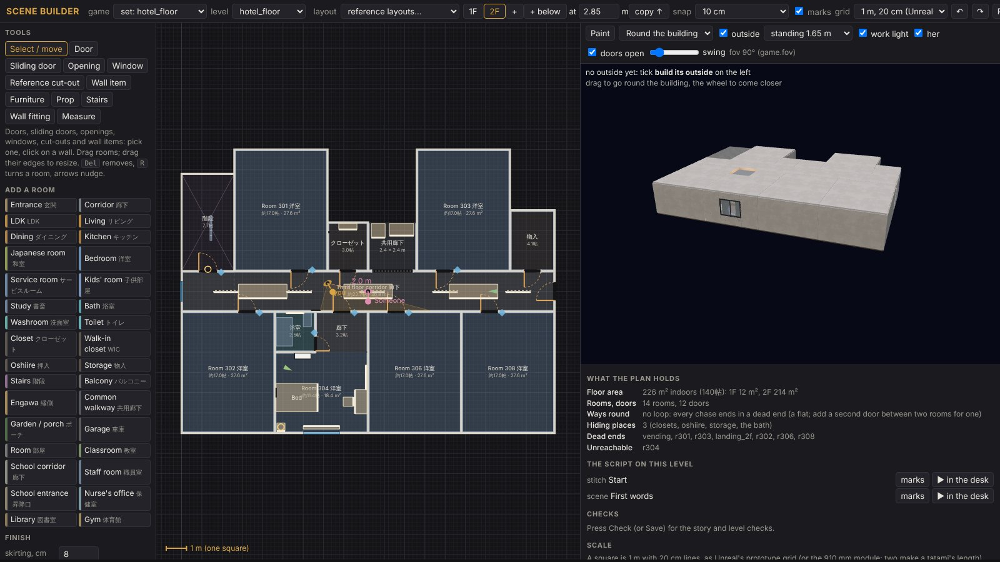
Round the building: the floor seen from outside.
The finished set was written as a layout file, Content/Studio/Sets/hotel_floor/layout.json, and made by
node tools/director/layoutset.mjs --file Content/Studio/Sets/hotel_floor/layout.json hotel_floor. The scene
builder opens it like any set.
8Export it
Press Export for Godot in the toolbar. It writes Exports/interiors/my_hotel/:
my_hotel.glb and a README. From here on, wherever the guide says hotel_floor, read your
my_hotel (exports/interiors/my_hotel/my_hotel.glb, Hotel → my_hotel → markers).
The ready-made floor is this export of the set hotel_floor, in Exports/interiors/hotel_floor/.
Inside the .glb:
visual/
every room's walls, floors, ceilings and things, each piece a node named by its id (r304_kt_tv_55_1...), with its materials
doors/
each door on its hinge, with its lock in its metadata (locked_by: key_304)
collision/, occluders/
what you bump into (Godot makes them bodies on import), and the boxes for occlusion culling
lights/
the lamps, at their fittings
markers/
player_start, spot_someone_spot (her mark), and trigger_<room>__volume for every room: its middle, and its size in the metadata
9The project
Make the project. It comes with the Look, UI, Weapons and Devices plugins, HumanShaders, the starter scripts, the
studio's sound shelf and the four moods:
Open it in Godot (Project Manager, Import). The second command links the studio's
Exports/ in: the ready-made floor is in your project at once, as
exports/interiors/hotel_floor/hotel_floor.glb, and so is anything you export from the studio's editors later.
You can drag the folders in instead. The first time Godot opens the project it imports everything, the floor too: a
minute or two, and the floor's textures are unpacked beside it as hotel_floor_0.png... (that's Godot's way
with a .glb; leave them).
res://
addons/horrorstudio_look/ the Look plugin (on)
addons/horrorstudio_ui/ the HUD and quest markers (on)
addons/horrorstudio_devices/ the laptop and its parcels (on)
addons/horrorstudio_weapons/ the double barrel, things that break (on)
HumanShaders/ skin and eyes
starter/ the starter kit: player, flashlight, story, sound, areas, pickups, notes, doors...
sfx/ the sound shelf: 240 CC0 sounds (ambience/, stings/, doors/, house/...)
music/ calm.ogg, uneasy.ogg, dread.ogg, chase.ogg
exports/interiors/hotel_floor/hotel_floor.glb
exports/characters/<her name>/ if you've made her in the Character Studio
10The scene: the hotel and you
Scene → New Scene, 3D Scene, rename the root Main, save it
as main.tscn and make it the main scene (Project Settings → Application → Run → Main Scene).
You'll end with this tree (built step by step below):
MainNode3D
Look HSLookEnvironment: balanced, Editor Only off
Grade HSGrade: cold
Hotel hotel_floor.glb + starter/interior.gd, Lights On off
Zones/ an HSLightZone a room, its lights inside it
Weather/ Rain (HSRainBox), Pane (HSWindowPane), Sweep (HSHeadlightSweep)
Dressing/ TV (HSCrtScreen), Mirror (HSMirrorSurface), WetFloor (HSWetSurface), Blood (HSBloodSplat)
Tones/ a room_tone.gd area a room
Things/ Note (note.gd), Key and Batteries (pickup.gd)
Her her .glb (hidden): HSCharacterLook, ArmsDown, LightShy (light_shy.gd)
HerAgain her again by the fire exit (hidden): the jump scare
Events/ UpStairs, In304 (event_area.gd); Welcome, LightsDie, SheIsThere, LightsOut, Jump (scare_area.gd)
Player starter/player.tscn at the hotel's player_start; its Flashlight on batteries
Story CanvasLayer + starter/story.gd
Sound Node + starter/sound.gd
The look. Add an HSLookEnvironment called Look (preset
balanced) and untick Editor Only. Add an HSGrade called Grade, preset cold.
The hotel. Drag exports/interiors/hotel_floor/hotel_floor.glb onto Main, rename it
Hotel, and drag starter/interior.gd onto it. Untick its Lights On: you'll light it
yourself. When the game runs, interior.gd makes every door open with E and keeps their locks, and
lets light through the windows' glass.
Right-click Hotel → Editable Children: you'll need its meshes and markers.
You. Drag starter/player.tscn onto Main. Put it where Hotel → hotel_floor → markers → player_start
is (copy its transform): the stairwell's bottom landing, facing up the first flight.
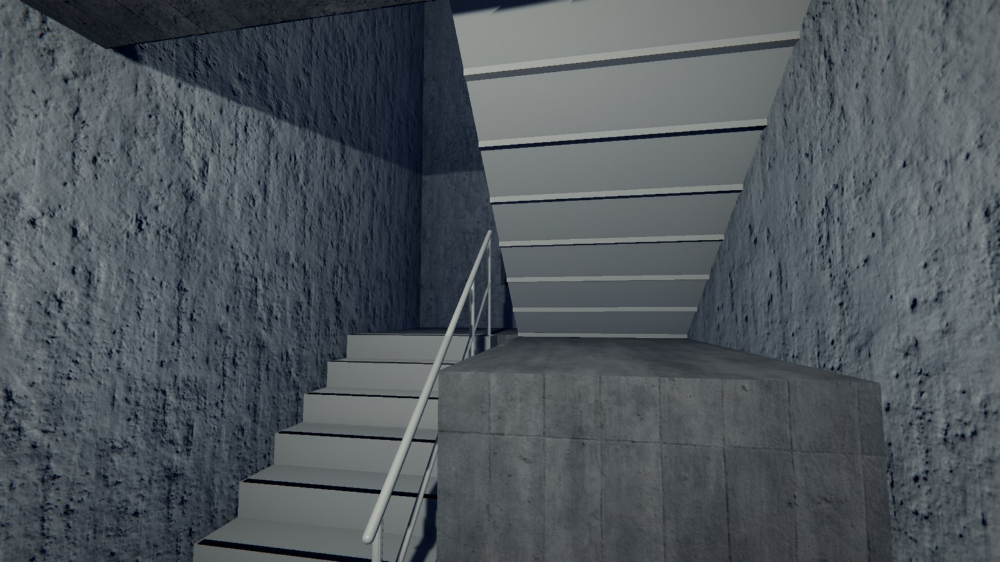
Where you start. The player walks up the treads: it steps up anything 50 cm or lower.
11Lighting it
An HSLightZone owns the lights inside its box. Only what's in the box gets their light, so a
lamp never lights the next room through a wall, and they switch off while you can't see the box. Make a
Zones node with a zone for each room you'll light. Put each at its room's marker
(markers/trigger_<room>__volume) and give it the size in that marker's metadata (width, height, depth):
Zone
Room
Size (m)
Its lights (children)
Stairwell
stairs
2.5 × 5.4 × 4.7
two presets/fluorescent_tube.tscn at the stair's battens (Amount 0.15)
Corridor
corridor
18.3 × 2.55 × 1.9
five fluorescent tubes at the five battens (lights/light_corridor_kt_tube_batten_1...), Energy 1.3, Range 5, Amount 0.12; the third Amount 1: it stutters
Room304
r304
4.5 × 2.55 × 3.9
an OmniLight3D in the floor lamp's shade, 1.4 m up (the export's marker is at its foot): warm (1, 0.78, 0.55), Energy 1.1, Range 7, shadows
Entry304
r304_entry
2.5 × 2.55 × 1.9
an OmniLight3D near the ceiling, Energy 0.5
Bath304
r304_bath
1.9 × 2.35 × 1.9
an OmniLight3D, cold (0.85, 0.92, 1), Energy 0.9, shadows
Vending
vending
2.3 × 2.55 × 2.3
presets/dying_bulb.tscn: out more than on
The linen closet gets no light at all: you'll need the flashlight in there.
The corridor under its five tubes.
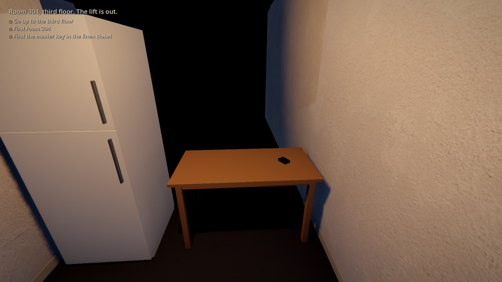
The vending corner's dying bulb.
A zone also takes each light's glass with it in the game: the tube in its fitting, a lamp's bulb, whatever
glows within 30 cm of the light. When a tube goes out, flickers or dims, its glass does too, so a dark corridor never
has glowing tubes in it.
Scares' lights: since each zone holds its room's lights, a scare can name the zone and get exactly
those lights: "every light under the Corridor zone".
12Rain, a car, the TV, the bath, a leak
The Look plugin's nodes go on the hotel's own meshes (their Target) or stand in the world. Make a
Weather node and a Dressing node for them:
HSRainBoxRain
outside the corridor's end window, 2.2 m out: Size 3.6 × 7 × 6, Count 3000, Strength 0.75
OmniLight3DStreetLamp
outside, below the window: orange (1, 0.66, 0.34), Energy 4, Range 10, shadows on (so it only comes in through the window). Rain at night is only seen where a light catches it
HSWindowPanePane
Target: the end window's glass (visual/corridor_fx_win1/…/kit_glass2), Rain 0.7: drops running down it
HSHeadlightSweepSweep
at 304's window, its −Z into the room: Every 18 s, Out 7, Energy 8. A car's lights cross the ceiling
TV, its HSCrtScreen
a MeshInstance3D with a QuadMesh the screen's size (1.2 × 0.68) just in front of the TV's screen, facing the room, and an HSCrtScreen child, Brightness 1.3: static. A CRT wants its glass's UVs to run corner to corner, which the quad's do; the kit's own screen is mapped in metres
HSMirrorSurfaceMirror
Target: the bath's mirror (visual/r304_bath_kt_vanity_mirror_1/…/kit_mirror): a real reflection
HSWetSurfaceWetFloor
Target: visual/r304_bath_fx_floor (the tiles), Wetness 0.85, Puddles 0.6
HSBloodSplatBlood
on the bath floor beside the tub: Size 0.55, Seed 3
HSLightShaftStairShaft
the stairwell's window (under Weather): at its glass's middle, its −Z into the stairwell: Width 0.5, Height 0.8 (fit the orange outline to the glass), Sun Down 48, Floor Y 1.425 (the half landing's top), Strength 2.5, Dust 0.6, an orange Color. Give it a SpotLight3D child (orange, Energy 14, shadows on): with Aim Lights it's put outside and aimed along the beam. The street lamp's light falls through the little window onto the landing (interior.gd keeps the windows' glass from casting a shadow, so light comes through it)
HSWallLeakLeak
at the window's sill on the wall under it, its −Z into the stairwell, Target: visual/stairs__wall_n1 (the wall under the window): Width 0.35, Length 0.46 (down to the landing), Wet 0.85, Drip 2. The rain is coming in
HSPuddlePuddle
on the half landing under it, in the lamp's patch (60 cm out from the wall): Size 0.8, Seed 2
HSPatternLightLeaves
in 304, high by its window, aimed at the TV's wall (Aim Distance about 3): Pattern leaves, Energy 3, warm (1, 0.85, 0.6). The street lamp through a tree, its shadows moving on the wall
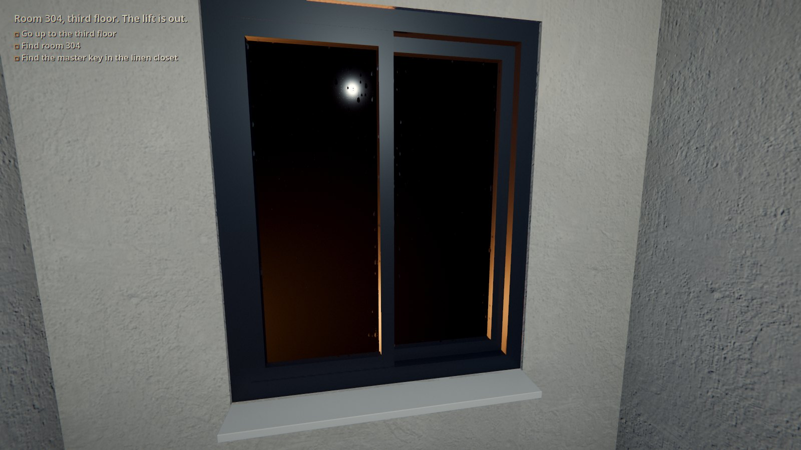
The end window at night: the street lamp below, drops on the glass.
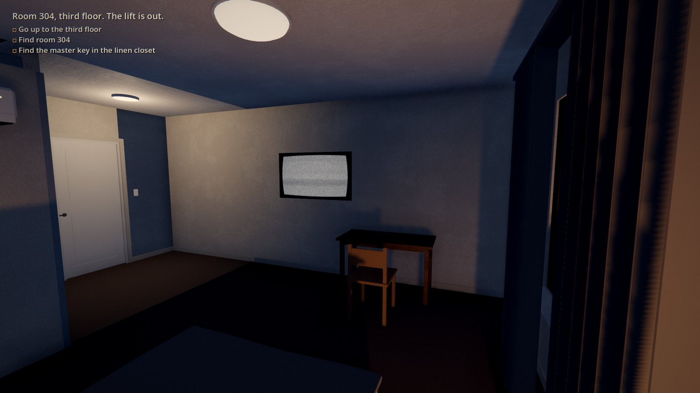
304: the TV's static, the lamp, the leaves' shadows on the wall.
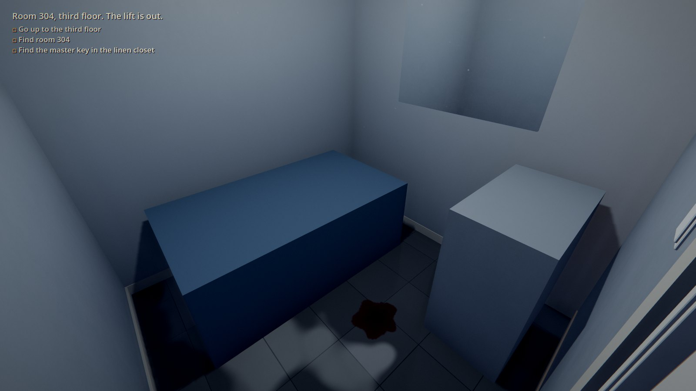
The bath: the mirror, the wet tiles, the blood.
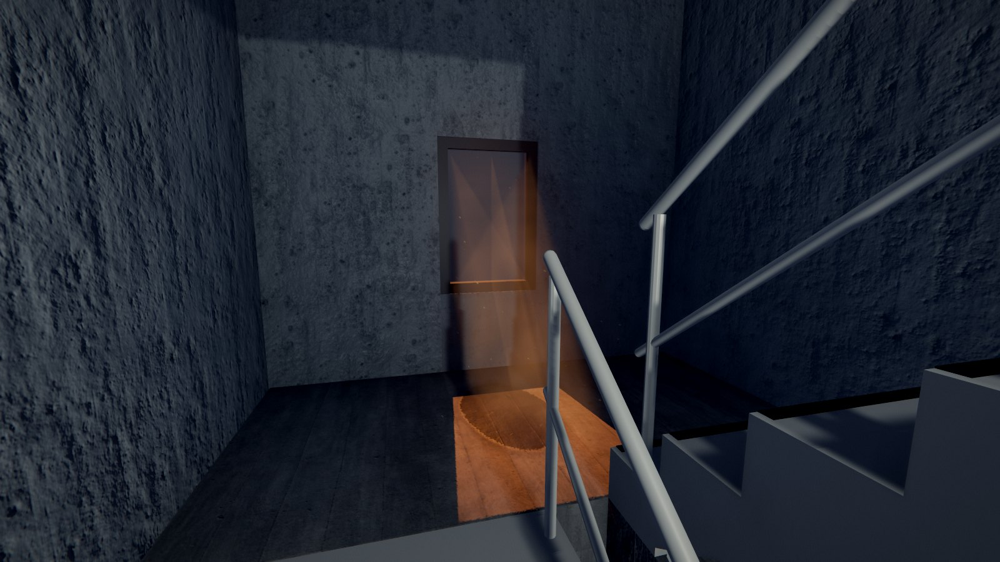
The stairwell's window: the street lamp's shaft, the leak, the puddle.
13The air: haze, dust and the flashlight's beam
Real air isn't empty. An old hotel's corridor at night has a little haze and dust in it, and a flashlight in it is a
beam, not just a lit spot on the wall. Add a Node3D called Air with an
HSAtmosphere (or drag in presets/air_hazy_night.tscn and tune it):
Fog 0.3
the fog level: 0 clear air, 0.25 the look's own haze, 0.5 about 80 m to see through, 0.75 about 35 m, 1 about 20 m (the woods in fog)
Color (0.82, 0.8, 0.76)
the fog's own colour: a warm, dusty grey
Dust 0.4
motes in the air, seen only where a strong light catches them against the dark (in a lit corridor you won't see them, as in life): specks of many sizes that flash as they tumble, threads of lint, drifting on the room's slow air
Noise 0.4, Wind (0.05, 0, 0.02)
wisps and pockets, drifting slowly: indoors the air barely moves
The flashlight's beam comes with the starter kit. Eye/Flashlight has an AirBeam child
(an HSBeam) that draws its beam in the air, as thick as the air is. It also gives the light a
flashlight's cookie: a hot core, a faint ring, a dim spill. The beam follows the battery, so it fades as the flashlight
dims. Dust shows best in it.
A dustier stairwell. The stairwell is old concrete: give it its own air. Add an
HSAirZoneStairsAir at the stairs' marker, Size 2.5 × 5.4 × 4.7 (the room's),
Fog 0.45, Dust 0.85, Seconds 2. While you're in the stairwell the air thickens; out in the corridor
it eases back.
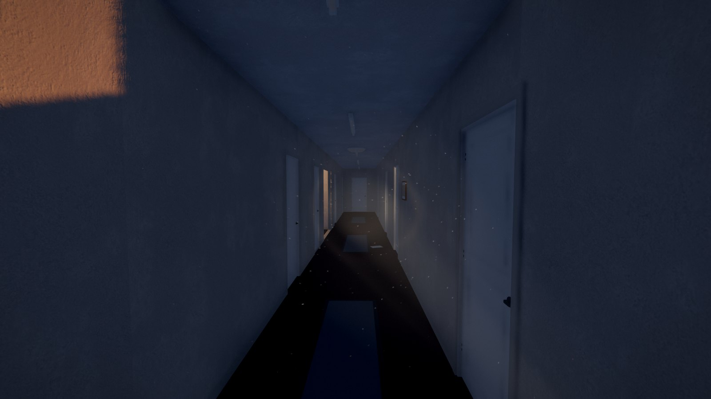
The corridor's tubes off: the flashlight's beam in the haze, dust in it.
The woods: outdoors, try presets/air_woods_mist.tscn: ground mist (Mist, thick at
Ground and thinning with Mist Height) drifting on the wind, and your flashlight a beam in the fog.
A moment can change the air too: an event or a scare's Fog rolls it to a level over Fog Seconds.
14Music and room tones
Add a Node called Sound with starter/sound.gd. It plays the
studio's four moods from music/ (calm, uneasy, dread, chase: made from the score room's cues, all at
the same loudness) looped under the game. Moving to the next mood crossfades it in so the loudness doesn't dip. Set
its Mood to uneasy: that plays from the start. The music sits low, under the game.
Each room gets its own sound while you're in it. Make a Tones node and an Area3D
for each room with starter/room_tone.gd. Set its Interior to Hotel and its Room
to the room's id; it takes the room's size by itself. Then drag a loop from sfx/ambience/ onto its Tone:
stairs
ambient_01.ogg (a low drone)
corridor
electric_hum_01.ogg (the tubes' hum)
r304, r304_entry
room_tone_02.ogg
r304_bath
water_running.ogg (a tap left on)
linen
room_tone_05.ogg
vending
electric_hum_03.ogg (the fridge)
They crossfade as you walk from room to room, and sit well under the music, barely there.
Every sound has its room in it. The Sound node traces each sound it plays through the level, the way Woohill
does. It sends 32 rays out from the sound, bounces each one four times off the walls, floors and ceilings, and works
out how the sound reaches your ear:
The room's reverb. The concrete stairwell rings for seconds, the bathroom's tiles ring briefly, and the
carpeted corridor is nearly dry. The reverb is rendered ahead of time for every sound on the shelf (four lengths,
short to long). Godot's own reverb clangs on sharp hits.
Muffled through walls and doors. A knock inside 304 with its door shut reaches you dull, only its low
thump. Open the door and it's clear.
An echo off the farthest reflecting wall, when there's one late enough to hear.
It knows what each room is made of from the hotel's export: each room's marker carries its floor and the sets on
its walls and ceiling. Concrete and tile reflect, plaster less, carpet and tatami hardly at all.
Footsteps. The player now steps once every stride walked (0.8 m at a walk, longer when you run), on the floor
under you: carpet in the corridor, concrete on the stairs, wood in a house, and wet on the bath's wet tiles or in the
stairwell's puddle. Your own steps get only the short reverb, so nothing trails behind them.
Your own sounds go through it too. A door's Open, Close and Rattle, and a scare's
Sound, are shaped the same way. To play one from a script, call
get_tree().get_first_node_in_group("hs_sound").play("knock_slow", where) with a name off the shelf and a point.
Tuning it:starter/acoustics.json holds the numbers: what each material reflects
and muffles, the four reverb lengths, the echo. After changing a reverb length, run
python tools/sfx.py tails --force and install the project again
(python tools/godot_byhand.py install). The Sound node's Physics, Tails and Echoes
switch each part off.
15The story on screen
Add a CanvasLayer called Story with starter/story.gd. It draws the
objective and a to-do list at the top left, a line at the bottom, a note's card in the middle and the ending. It also
keeps what you carry and the facts you've set. The other scripts find it themselves. Set:
Objective Text
Room 304, third floor. The lift is out.
Tasks
up: Go up to the third floor and find304: Find room 304. Each task is an id, a colon, then what it says. The id is how the rest of the game ticks it.
Ending Title, Ending Text
Checked out / The fire stairs took you down to the street. Nobody ever asked who was staying in 308.
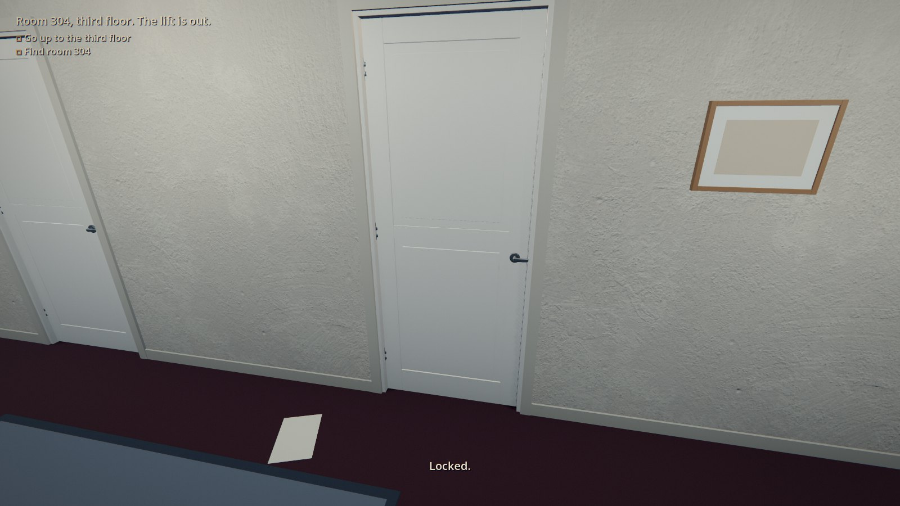
At 304's door: the to-do list, and the line the door says when it's locked.
16A note, a key, batteries
Things you use with E are a Node3D with a script and a mesh under it. The script makes
its own collider when the game runs, so E finds even a key. Make a Things node:
The note. A Note with starter/note.gd and a MeshInstance3D
child (a PlaneMesh 0.21 × 0.297: an A4 sheet) on the carpet in front of 304's door. Title
"Under 304's door", Text: the night desk's apology, saying the master key is on the shelf in the linen closet.
Add Tasks: key: Find the master key in the linen closet.
The key. A Key with starter/pickup.gd and a small brass mesh, on the front edge of
the linen bookshelf's third shelf, 1.1 m up. Itemkey_304: the name 304's door is locked by, so carrying it
opens the door. Label "the master key", Tickkey.
The batteries. A Batteries pickup on the vending corner's counter: Itembatteries
(a spare set for the flashlight), Tickbatteries.
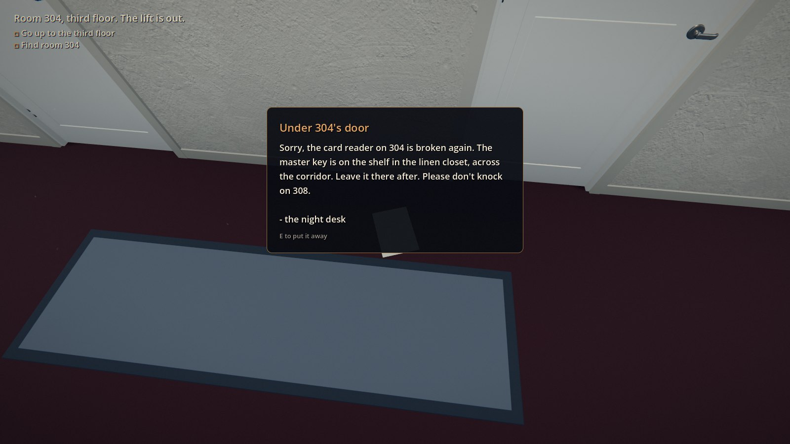
The note's card. E puts it away.
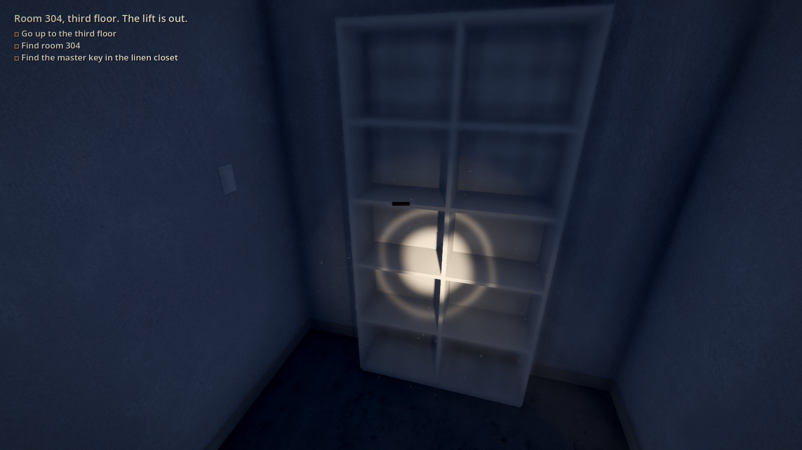
The linen closet, dark but for the flashlight. The key's on the shelf.
17Moments
An Area3D with starter/event_area.gd is a moment when you walk in. It can set
the objective, add or tick tasks, say a line, set a fact, change the music's mood, or end the game. With
InteriorHotel and a Room it fills that room. Needs holds it back until something's
true: task:find304 (a task done), on:out (a task on the list, not done yet), item:key_304
(carried), a fact, or ! for not.
Make an Events node and:
UpStairs
Room corridor: Tick up, Say "The third floor."
In304
Room r304: Tick find304, Music dread, Objective "Get out. The fire exit is at the end of the corridor.", Add Tasks out: Get out by the fire exit
18Scares
An Area3D with starter/scare_area.gd is a scare. It can work the lights under
Lights Of: out, dim, flicker, or out one by one toward you, farthest first. They stay that way, or
come back as they were after For Seconds. It can also show someone (Appear, for good or for Appear For
seconds), hide someone (Hide), play its Sound child (an AudioStreamPlayer3D
with a sting from sfx/), and change the music. Untick Walk In and only a signal starts it: its
fire method. Add to Events:
Welcome
Room corridor, Lights Of Zones/Corridor, Lights Do dim, Dim To 0.15, For Seconds 3, a Sound: sfx/house/power_hum_cut.ogg. The tubes sag as you come in, then come back.
LightsDie
Walk In off, Lights Of Zones/Corridor, one by one, Gap 0.35, For Seconds 4, a Sound: sfx/stings/sting_short.ogg. Select Things/Key, open the Node tab, double-click picked and connect it to LightsDie → fire. Taking the key puts the corridor out behind you, one tube at a time.
SheIsThere
Room r304_entry, Needs task:find304, Appear Her, a Sound: sfx/house/floorboard_creak.ogg. On your way out of 304 she's at the end of the corridor.
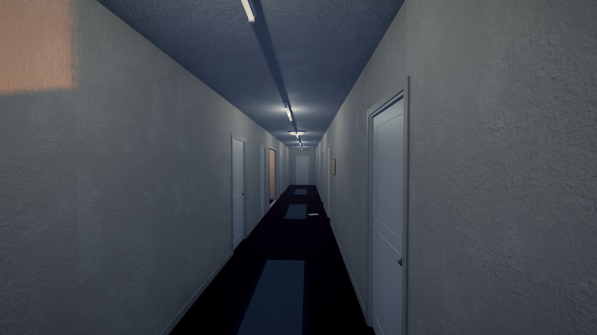
Welcome: the tubes at 15 % for three seconds.
19The flashlight's batteries
The player's Eye/Flashlight runs on starter/flashlight.gd. Select Player, tick
Editable Children, select Eye/Flashlight and set:
Battery 90
seconds of light from full (0: it never runs down)
Charge 0.5
half full when the night starts
Kind bulb
a bulb gets dimmer, warmer and shorter as it empties, and browns out near the end. An LED stays full, blinks three times at low, then drops to a third.
Low At 0.3, Low Says, Low Task
"The flashlight is dying." and the task batteries: Find batteries (the vending corner)
When it dies it stutters out, and F only clicks. The batteries from the vending corner go in by themselves:
two seconds of dark, then full light.
20Her, who hates the light
Drag her .glb from exports/characters/ onto Main and call her Her.
Make her yours in the Character Studio and press its Export for Godot. Or use a stand-in, as
the pictures here do: a Node3D with a few meshes under it (a CylinderMesh gown, two arms, a head,
and long black hair over her face: a sphere for the scalp and a cylinder that widens as it falls). Then:
Put her at markers/spot_someone_spot (the corridor's east end), facing down the corridor, and untick Visible: SheIsThere shows her.
Give her an HSCharacterLook child called Look (the studio's skin, eyes and hair) with
Wetness 0.6 and Drips 0.5: she's wet, and you'll see where she came from. Then a Node
with starter/arms_down.gd.
Give her a Node called LightShy with starter/light_shy.gd:
Doesbacks off, Distance 2.5, After 0.4. When the beam holds her for 0.4 s she backs away
from you, facing you. The other choices: freezes, vanishes until the light's been off her a while, comes toward it.
Its signals: lit, flashed, flashed_twice. Add a LightsOut scare (Walk In off,
Lights Of Zones/Corridor, one by one, Gap 0.25, for good, Fog 0.55 over Fog Seconds 5)
and connect LightShy's flashed_twice to its fire. Shine the light on her twice and the corridor goes
dark while the fog rolls in: now your flashlight is a beam.
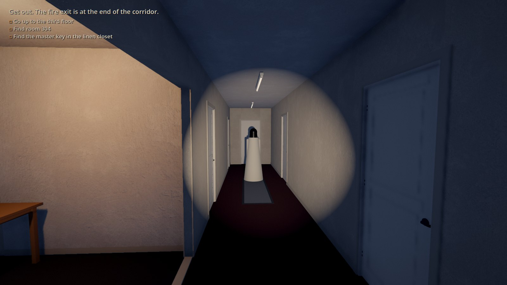
After she's flashed twice: the corridor dark, the fog in, only your flashlight on her.
21The jump scare and the hush
Duplicate Her as HerAgain, delete its LightShy, and stand her just inside the
fire door facing down the corridor. Untick her Visible. Add a Jump scare with its own
CollisionShape3D (a box 1 × 2.5 × 1.9 m across the corridor, 2.4 m before the fire door):
Needs
task:find304: not on the way in
Quiet 1.5
the hush first: the music and the room's tone fade to nothing. The last half second is silent.
AppearHerAgain, Appear For 0.9, HideHer
she's suddenly right there, then gone
Sound
sfx/stings/sting_big.ogg
Tapenightmare, Tape For 0.9
the picture breaks up while she's there. Add a HSTapeTape to Main with Presetoff: the scare turns it on, then off again. (Leave it on, camhybrid or worn, for a game seen on tape.)
Why the hush: a sound just before a scare warns the body and takes up to two thirds off the startle. Silence before
the hit lets it land, and the music creeping back afterwards is the release. The studio's research is in
docs/research/jump_scares.md.
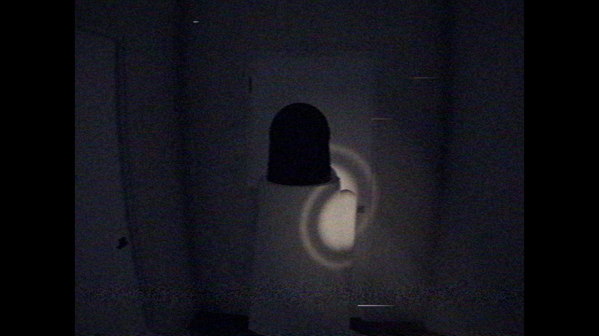
The jump: 0.9 seconds of her out of silence, the tape breaking up.
22Making it intense
What's left makes the same night more intense without any more story: your own body, the things that tell you
she's near, what you half see, the night outside. Each is a node or two from the starter kit or the Look plugin. The
studio's research behind them is in docs/research/intensity.md.
Your body
Add a Node called Fear with starter/fear.gd. It keeps one
number, how afraid you are, from 0 to 1. It rises as she comes within 8 m, more when you can see her, and jumps with
every scare; it falls back slowly. What it does with it:
A heartbeat, from a quarter of the way up: 60 beats a minute rising to 140, a little uneven.
Breathing, quicker and heavier as it climbs.
The world dulled: everything you hear loses its highs and gets a little quieter, but your heart and breath
don't. People in danger say the world goes quiet like this.
A vignette closing in on the grade.
Your flashlight's beam shaking in your hand, 8 to 10 times a second. Only the light shakes, never your
view: a shaking camera makes people sick.
Each has its own switch on the node (Heartbeat, Breathing, Dull, Vignette,
Tremor). Leave them on, but give your players the same switches in your settings: heartbeats bother some people
a lot. The heartbeat and breath play on the Body bus, which has its own fader. ring(4) from
a script muffles the world after a bang and brings it back over four seconds.
Steps behind you
Add a Node called BehindYou with starter/behind_you.gd, and
connect the batteries' picked signal to its start. On the walk back from the vending corner every
step you take is answered a moment later from three metres behind you, on wood while you're on carpet: someone
else's. Stop, and it takes one step too many, then it's quiet. Turn round and there's nobody.
Use it once or twice a game at most: the second time it's already less frightening. With Chance Per Min
above 0 it can also come by itself while you're afraid, but never again within Rest seconds (ten minutes).
Signs that she's near
Give Her one more Node, called Presence, with
starter/presence.gd. While she's out and within 10 m of you, the lights around her dip for a moment now
and then, more often the closer she is, and your flashlight dips with them. Put a radio on the vending corner's table
beside the batteries (a BoxMesh will do: someone left it on) and set Static On to it:
its static rises as she comes. Silent Hill's radio does this, and so do Phasmophobia's lights.
Radius 10
how near she has to be. The lights that dip are the ones within it on her floor.
Max Dips 2.5
dips a second at most, right beside her. Keep it under three: three flashes a second is the limit for players with photosensitive epilepsy.
False Alarm 0.1
one time in ten, as she goes, the signs come back once for a few seconds without her, so they never quite mean she's there
A dimming scare and her dips don't fight: each light keeps its level and her flicker apart. Connect any signal to
warn to start the signs a moment before she shows.
The corner of your eye
Add a Node3D called Glimpse under Events with
starter/glimpse.gd. Stand it at 308's door, 0.4 m out from its wall, turned to look down the corridor
toward you, and put a copy of her under it (duplicate Her, then delete the copy's
LightShy and Presence). Set Flicker to Zones/Corridor/Tube5, the tube
over her, and connect the note's read signal to its arm.
From then on she's there only while 308's door is 30 to 42° off where you're looking and 5 to 15 m away. That's
the edge of your vision: it sees little detail, but it catches movement and fear. Turn toward her and she's gone before
you're looking at her, in the tube's blink. She never makes a sound (a sting would make her a jump scare), she never
comes while a note's card is up, and she comes once (Times). Some players will see her and most won't, so never
hide a clue this way.
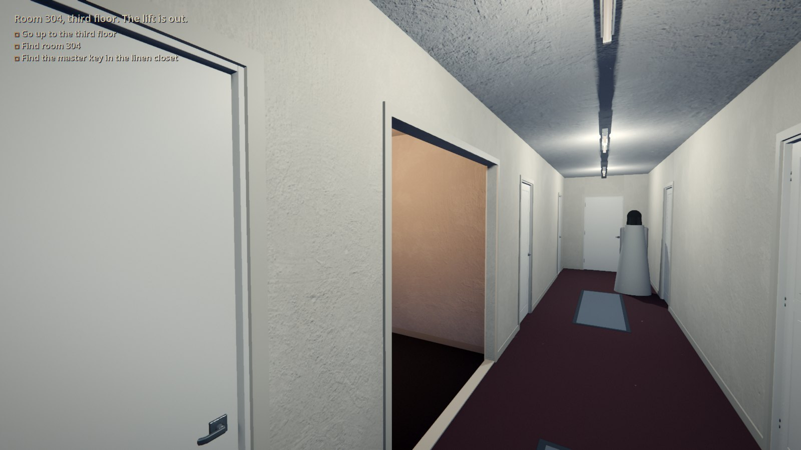
36° off where you're looking: her at 308's door.
Closer each time you look away
Add a Node3D called Closer under Events with
starter/closer.gd. Give it three Marker3D children, far to near:
BathDoor in the entry by the bath's door, EntryMouth where the entry opens into the room,
and BedFoot at the foot of the bed, each turned to face into the room. Then add another copy of her.
Set Blink to Zones/Room304/Lamp, connect In304's entered to its
arm, and its caught to Fear → scare.
When you walk into 304 she's standing by the bath's door. She never moves while you can see her. Look away for a
second and a half and she's on the next mark, turned a little more toward you. Unseen means all of it:
outside your view, widened by 15° all round so that an arm at the edge counts;
every ray from your eye to her head, her middle and her feet stopped by something;
and not in a mirror you can see.
After the foot of the bed her last step is 35 cm behind your eye. Turn round: she's there, your heart jumps, and
after a moment she's gone in the lamp's blink. Look away instead and she's simply gone. Walk right up to her on a mark
and she goes in a blink too: she's never seen to move or vanish.
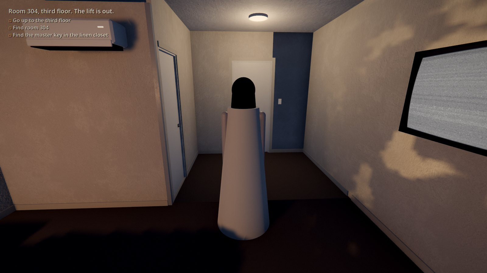
Her second mark, where the entry opens into the room. You only looked at the window.
Only in the mirror
Add a Node3D called MirrorHer under Events with
starter/mirror_figure.gd. Stand it in the bath's tub, turned to face the mirror, with one more copy of her
under it. Add an event area called InBath (Room r304_bath, nothing else set), connect its
entered to MirrorHer's arm, and MirrorHer's seen to
Fear → scare.
Walk into the bath and look in the mirror: she's standing in the tub behind you. Turn round and the tub is empty,
and so is the mirror when you look back. She's on render layer 19, which only the mirrors' cameras draw (the Look
plugin keeps it for this), and she casts no shadow, which would give her away on the floor. Untick Only In
Mirror for the other way round: she's there when you turn round, and missing from the mirror (layer 20). Use it
once a game at most: after the first time, players watch every mirror.
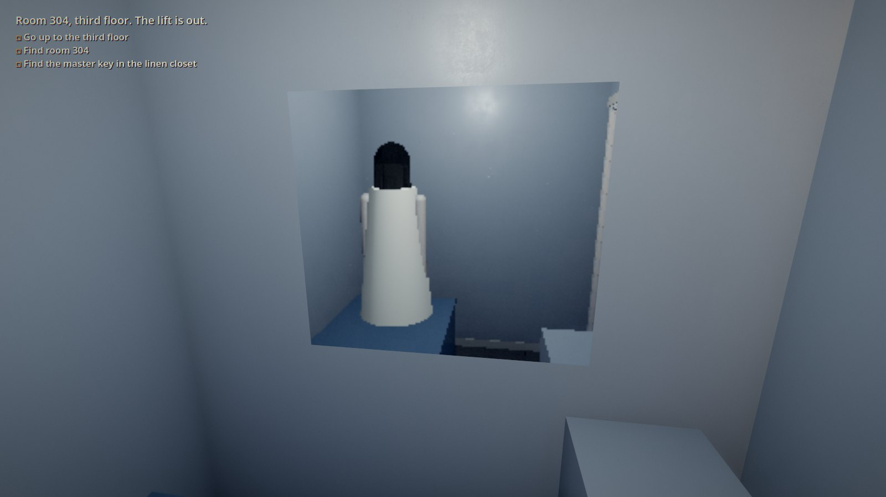
At the basin: in the glass she's standing in the tub behind you.
Writing in the steam
Once she's gone from the mirror, the mirror has more to say. Add a Node called
Steam to Events with starter/steam_mirror.gd, its MirrorDressing/Mirror (the bath's HSMirrorSurface) and its Text308. Then a cue to start it: a Node3DMirrorSteam with
starter/cue.gd and a Marker3DGlass under it at the middle of the
mirror's glass.
SpotGlass, Lookmiddle, After Secs 1
a moment looking into the mirror
Armed off, Scare off, TargetSteam
connect MirrorHer's gone to its arm: it waits until she's left the glass
Back at the basin, the mirror fogs over from the bottom edge in six seconds, and as it comes, 308 shows in
it: clear lines where a finger wrote on the glass, the steam not forming on what the finger left, with drips running
down from them. It stays twenty seconds, then clears, and the words go with it. The note asked you not to knock on
308. The Look plugin's HSMirrorSurface takes the same Steam (0 to 1) and
Writing by hand: a bathroom mirror steamed over for good, or words that were always there.
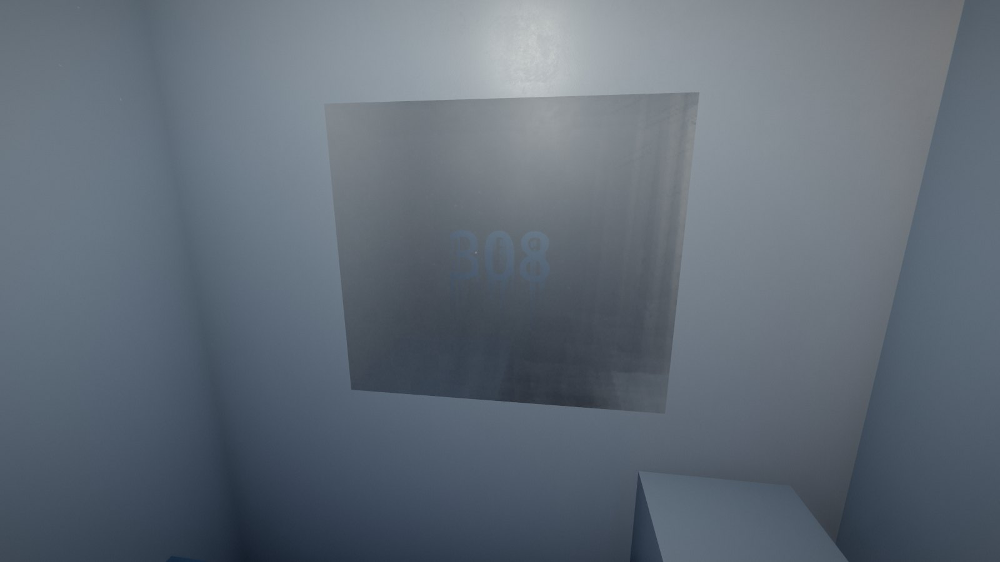
The mirror steamed over, and what someone wrote on it.
A shadow that isn't yours
Add a Node3D called ShadowPass under Events with
starter/shadow_pass.gd and one more copy of her under it. Set its Lamp to
Zones/Room304/Lamp, and connect MirrorHer's gone to its arm.
The next time you stand in 304 with the floor lamp behind you and a wall ahead (by the bath's wall, say), someone
walks across behind you: a shadow slides over the wall in front of you, and when you turn round there's nobody. Your player casts no shadow,
so it can't be yours. She only casts a shadow (every mesh of hers set to Shadows Only, done for you), so there
is nothing of her to see. P.T. did this with a corridor's light. The floor lamp's light reaches the walls because
interior.gd lets the kit's lamps pass their light through their shades, as it does the windows'
glass.
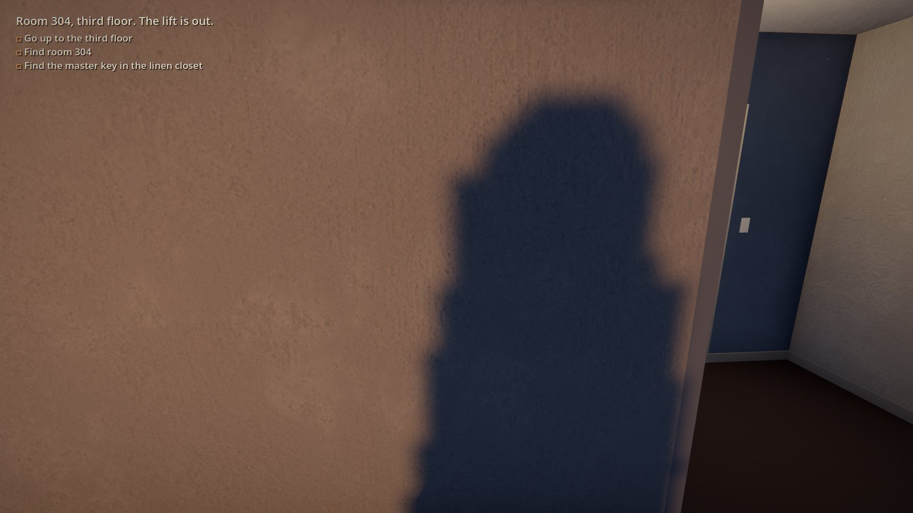
Someone crossing behind you, on the bath's wall.
Feet under the door
Add a Node3D called Feet308 under Events with
starter/door_feet.gd, put it on the corridor's side of 308's door, and set its Door to
hotel_floor/doors/door_door_308: it sits itself at the door's foot, as wide as the door, and makes the
light that comes under it from the room. Connect LightsOut's scared to its arm.
While the corridor's lit the line of light under 308's door is barely there. Once it's dark the line is bright,
and when you come within 4 m and look at it, two shadows walk into it and stop: someone is standing right behind the
door. Four seconds later they walk away. They wait for your eyes, so they never come while you're looking at her. The
note asked you not to knock on 308.
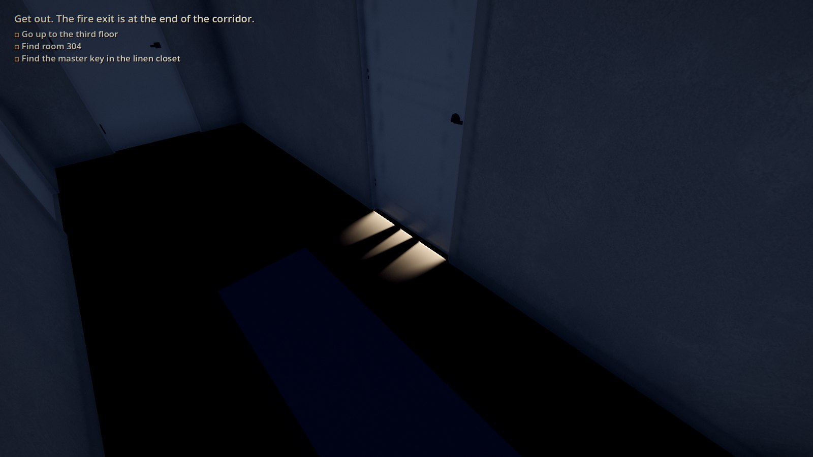
The light under 308's door, and someone standing behind it.
Something wrong with her
Give Her a Node called Uncanny with
starter/uncanny.gd: Tilt Deg 48 and Mimic on. Her head is bent to the side further than a
neck goes (about 42°), and she steps when you step and stops when you stop, a step toward you for each of yours, never
nearer than 2.5 m and never while your light is on her. Give the closer's figure (Events/Closer/Figure)
one too, with Smile 0.6: when you turn round to her 35 cm behind you, she's smiling with her mouth and not her
eyes (MHR's lip corner puller without the cheek raiser). Stare turns her blink off: people blink about 17 times
a minute, and a face that never does isn't alive.
The smile and the stare need a Character Studio character (her face's shapes and her blink); the stand-in has
neither, so the bent head and the steps are what you'll see with it. One wrong thing a face: put them all on one face
and she reads as a monster instead of a person.
The night's director
The story's moments happen where you put them. Between them, a director can fill the gaps with small things, the
way Left 4 Dead's does: add a Node called Dread with
starter/dread.gd, its Safe Roomsstairs and landing_2f (nothing happens
on the way up), and a Node3D called Moments with a Node3D
for each small thing, each with starter/dread_moment.gd, standing where it happens:
Knock302
just inside 302's door: Soundknock_three, Tier 2, Whereout of sight, Far M 18. Three knocks from inside a room, then nothing.
DoorBelow
in the stairwell by the second floor's door: door_close_02, tier 1, out of sight, Near M 5
StepsAbove
over the corridor's ceiling: steps_upstairs, tier 2, Far M 12. The sound physics muffle it through the ceiling.
Thud306
inside 306: thud_soft_02, tier 1, out of sight
Handle304
outside 304's door: latch, tier 2, Needstask:find304, Once. Someone tries the handle while you're inside.
Chain308
just inside 308's door: chain_grind, tier 3, needs task:find304, once
The director keeps one number, how intense the night is: every scare raises it, being flashed twice raises it,
its own moments raise it a little, and it falls slowly. While it builds, a moment comes every 25 to 70 seconds (never
on a beat: a steady gap reads as a clock), picked among the ready ones by their Weight, never the same one twice
running and never the same tier when another will do. At 0.85 it holds its peak for four seconds, then relaxes for 30
to 60 seconds with nothing at all. Nothing comes in a safe room, while a note's card is up, or after the ending.
Pacegentle or relentless stretches or shortens the gaps; give your players that setting.
A moment can fire() anything too (its Target: a scare with Walk In off), so a light
dying or her glimpse can be one of the director's. Keep tier 1 rare: a creak every minute becomes wallpaper.
Her menace
Give Her a Node called Menace with
starter/menace.gd, Near Rate 0.02 and Seen Rate 0.03. It's a gauge that fills while
you're within 8 m of her and faster while you can see her, and drains when you're not near. Stay near her about half
a minute and she withdraws: gone for a minute or two, while the director relaxes, then she's back where she was.
Alien: Isolation's alien does this, and its designers said why: "As soon as the player can predict a pattern in the
Alien, it stops being scary." Her presence can't be stared down, and she can't be counted on.
Hiding while she searches
Once the corridor's dark she hunts by ear. First somewhere to hide: a Node3D called
Hide under Things with starter/seat.gd, Posehiding, in the linen
closet's far corner beside the shelf, 0.95 m up (crouched), its −Z toward the doorway; Reach Size 0.6 × 1.3 ×
0.6, Reach At (0, −0.3, 0), Say "Crouched in the corner. Space holds your breath." Give it two
Marker3D children: Approach just inside the doorway, where she'll stand to look
(1 to 1.5 m from your eye), and Via in the corridor in front of the doorway.
Then one more copy of her under Events, called Hunter, on her spot by 308's door: her
post, where she goes back to. Give it a NodeSearcher with
starter/searcher.gd: ReplacesHer, Hiding PlacesThings/Hide,
Searches 1, Heard Says "She heard that." Give it a Presence too, its Static On the
radio: the static and your flashlight tell you she's coming. Connect LightsOut's scared to the
Searcher's arm, and Jump's scared to its stop (one of her at a time).
When the corridor goes dark she takes the first one's place and listens. Your steps carry about 4 m, a run 12, a
door 6 and a gasp 11 (starter/noise.gd's loudness times her Hear M, 12; anything of yours can
make one with Noises.make(get_tree(), where, how_loud)). Heard, she stops and listens 3 to 6 seconds,
turned toward it, then walks to the hiding places nearest where she heard you (within 6 m), opening a shut door on her
way, and stands in the doorway 2 to 4 seconds, breathing: the close pass. Hold your breath (Space) and her chance of
finding you halves (Held Factor 0.5); with your flashlight on she finds you for sure. Hold it more than 8
seconds and you gasp, and she hears that too. Found, she pulls you out and is in your face for a moment. Either way she
walks back to 308's door, her steps going away, and after one search she's gone back in. Out in the open while she's
looking she sees you 7 m off with your light on, 3 m with it off.
Alien: Isolation gave its players the held breath, Outlast the being pulled out, Resident Evil 2's Mr. X footsteps
that tell how far he is. Their pitfalls were searches you can't survive and long waits in a wardrobe, so here she
searches once and being found is a fright, not a death (wire found to an ending if you want it to be).
While she's out the night's director keeps its moments back, and the Fear node feels her in the doorway. A place to
hide used three times is the first she checks: give a level two or three.
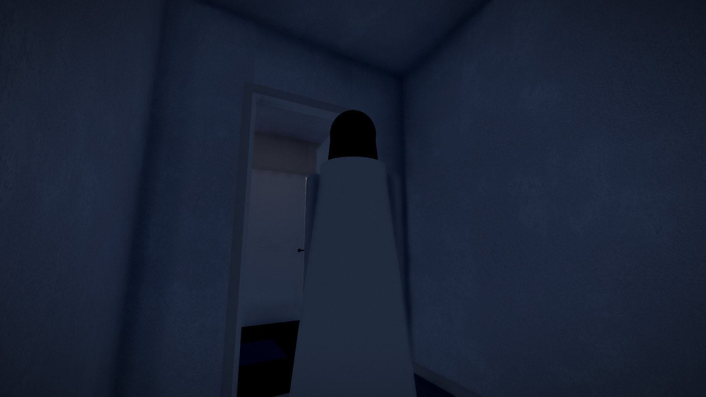
From the corner: her in the linen closet's doorway, the dark corridor behind her.
A chase
Give Hunter one more Node, Chase, with
starter/chase.gd: its Searcher../Searcher, Safe Roomsstairs and
landing_2f, Start Says "Run." Then set the Searcher's Chase to it. Now, if she sees you out
in the open while she's searching, she doesn't take you on the spot: a sting, a beat to turn round, and she runs at
you at 0.95 of your run. Run straight and she keeps her distance; stop and she has you. A door you shut behind you
holds her 2 seconds and a bang before she's through it (a locked one holds her for good).
She goes only where she saw you go, and a step further the way you were heading. Get out of her sight (through a
door, shut behind you, and on round a corner) and after 6 seconds she's lost you: she searches the places to hide
near where she last saw you instead, the way she searches when she hears you. Caught, it's her fright, the same as
being found. The stairwell is the sure way out: she won't follow you onto the stairs. And after 20 to 40 seconds she
gives up anyway, so no chase is learned by heart. While it runs the music is the chase mood (the Sound node's); after
it, the hush, then the mood that was playing before. There's no navigation mesh in this: she runs your trail, which in
a corridor with rooms off it is all she needs.
Lightning
Add the Look plugin's HSLightningStorm to Weather (or drop in
presets/lightning.tscn), turned so its forward points down and east through the end window and 304's,
with Every 50, Km 1.2, Thundersfx/ambience/thunder.ogg on the SFX bus.
Add one more copy of her at the corridor's west end by the end window, facing down the corridor, set her as the
storm's Figure, and its Figure Times to 1: in the first flash someone is standing there against the
window, and after it there's nobody.
The thunder comes 3 seconds a kilometre after the flash. Every strike is made safe for players with photosensitive
epilepsy, who can have seizures from more than three flashes a second: a real flash is three to five strokes 60 ms
apart, too many, so here a strike is one flash, its flickers riding on a glow that never dips more than a tenth (so
none counts as a flash of its own), then at least a second of dark before the next. Give your players a Reduce
setting (0 to 1: how bright the flash is) and turn it down for them when they ask.
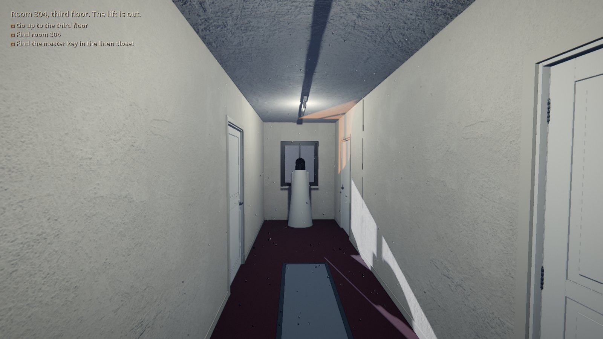
The first flash: someone by the end window. The second: nobody.
The cold
Where she stood in the flash, it's freezing. Add an Area3DColdSpot to
Events with starter/cold_area.gd and its own CollisionShape3D: a box
1 × 2.5 × 1.9 m filling the metre in front of the end window. Add Weather/Pane (the end window's
HSWindowPane) to its Panes. The rest as it is: Frost 0.8 in Frost Seconds 8,
Thaw Seconds 30, Breath After 1.
Walk up to the window and your breath shows: a puff every few seconds, out in front of you. The window frosts up
from its bottom edge while you watch, and through the frost the street lamp is a blur. Walk away and the breath stops;
the frost goes slowly. Your breath is the Look plugin's HSBreath, made at your eye the first
time. It's seen only where a light reaches it: in the dark it isn't there at all, your flashlight catches it softly
where it crosses the beam, from about 60 cm out, and a lamp behind it lights it up (water droplets throw light
forward). Breath shows below about 7 °C. Keep it for one place, or it reads as weather.
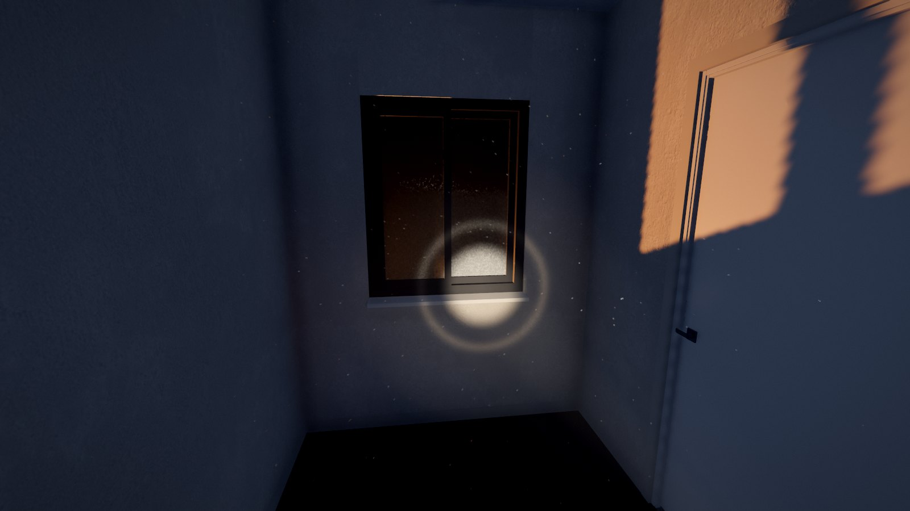
At the end window, the corridor dark: the glass frosting up from its bottom edge.
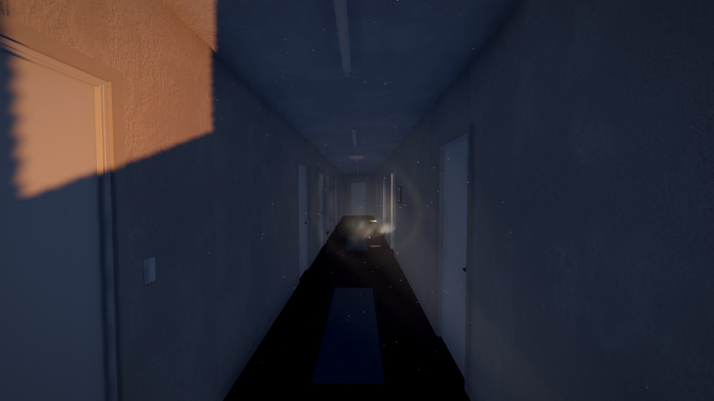
Your breath there, crossing the beam. Against the beam's own spot on a near wall you'd hardly see it: it shows against the dark.
23Cues: when everything is so
A cue is one node that waits until everything you set is so, then does what you set. It can be a jump scare
(someone there for a moment with a sound and an animation, then gone), or something that isn't a scare (a knock, a
line, a task, a fact, the music, another node's fire). Put starter/cue.gd on a
Node3D. Its fields are in three groups, and a field left as it is doesn't count.
Where you look
Spot
where the event is. Empty: the head of what appears.
Look
where that spot must be in your view. The frame is cut in thirds each way: middle is the
middle third; left, right, top and bottom the outer thirds (either side: left or
right); a corner (top left... any corner) where a side meets the top or the bottom; edge the outer
sixth all round. Or in view anywhere, or out of view (behind you, off the frame, or with something in the
way).
Tolerance 0.1
the range of acceptance: every region a tenth of the frame's half wider, so it needn't be
exact. Near a line the spot counts on both sides of it.
Line Of Sight
on: a spot behind a wall is out of view.
What must be so
Needs
the Story's words: on:out while the task out is on your list and not done
yet (you're on that quest), task:out once it's done, item:key_304, a fact, ! for
not.
Doing
standing, walking, running, still, moving, sitting,
lying (in bed) or seated (either).
Flashlight
on or off.
Near M, Far M
how far your eye is from the spot.
After Secs, Chance
all of it so this long first; then a roll once a second while it stays so.
Armed, Once, Cooldown
Armed off: nothing until a signal calls arm. Once off: again after the cooldown.
What happens
Appear, Appear For
someone hidden until then, there this many seconds.
Face You, Animation
turned to you; an animation played on an AnimationPlayer under them.
Until Looked At, Vanish
gone sooner once you look straight at them; then gone at once, in a blink of
Blink Lamp and your flashlight, or once they're out of your view.
Sound, Sound At, Hush
a shelf sound at them (or at Sound At), the hush before it.
Scare
on: you jump (the Fear node) and the night's director hears it. Off for a cue that isn't a scare.
the story's side, as an event area's; Target's fire too.
A bed and a chair
Sitting and lying need somewhere to do it. Add two Node3Ds to Things with
starter/seat.gd, each where your eye goes when you're there, turned the way you face. E on one sits you
there or lays you down; E again, or a step, gets you up where you stood.
Bed
over 304's pillow, 1.01 m up, turned −90° (toward the bed's foot): Pose lying, Look Up Deg 70,
Reach Size 1.4 × 0.71 × 2.05, Reach At (0, −0.355, −0.725) (the box E finds it by, over the mattress), Say "The sheets
are cold."
Chair
over the desk chair's seat, 1.2 m up, facing the desk. The rest as it is.
Why so high in the bed: the interior's export makes each piece of furniture one solid box to its top, the bed's
to its headboard at 0.95 m. An ear inside that box hears every sound through its walls, so the eye sits just over it,
and the seat's box reaches above it so E finds the seat and not the bed. (Put a seat lower and the player lifts your
eye out by itself.) The seat's box is on collision layer 2: only E's aim looks there.
Her on the ceiling
Add a Node3DBedCeiling to Events with starter/cue.gd,
and a copy of her under it called Ceiling: face down on the ceiling over the bed, her head over yours,
her feet toward the bed's foot. Give her an AnimationPlayerMoves with one
animation, lean: her position 30 cm lower over 0.6 s, coming down off the ceiling at you.
Lookany corner, Tolerance 0.1
from the pillow her head is in the top right corner of your view
Needson:out, Doinglying, After Secs 2
only once you're getting out, only lying down, after two seconds of it
AppearCeiling, Appear For 1, Face You off, Animationlean
a second of her coming down at you
Vanishin a blink, Blink LampZones/Room304/Lamp
gone as the lamp blinks
Soundsting_big, Hush 1
out of a second's silence
Lie down and look straight up at her place and nothing happens: she's in the middle of your view, not a corner.
Stand by the bed with her place in a corner of your view and nothing happens either: you aren't lying down.
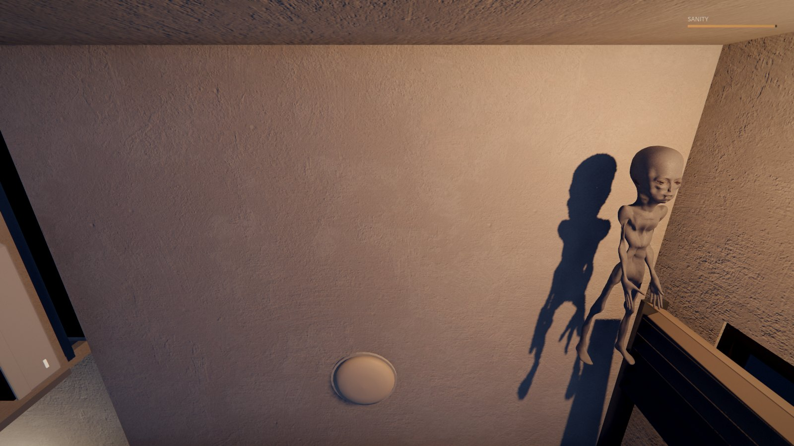
From the pillow: her head in the top right corner of your view.
Knocks while you watch
Not every cue is a scare. Add DeskKnock to Events with starter/cue.gd and a
Marker3DDoor under it, outside 304's door in the corridor:
SpotDressing/TV, Lookmiddle
the TV's static in the middle of your view
Doingsitting, After Secs 2
sitting at the desk, watching it two seconds
Scare off, Soundknock_three, Sound AtDoor
three knocks at the door, heard through it
Say "Three knocks. Someone is at the door.", Factknocked_304
a fact for whatever you build next
24The HUD and quest markers
From here on the night uses everything else the studio has made: the UI plugin's HUD, the devices plugin's laptop,
the weapons plugin's shotgun and the made props' effects. They're already in your project (godot_byhand.py
copies and turns on every plugin). First the HUD.
The Story still draws its own objective, list, lines and cards. The UI plugin's HUD adds the rest: a reticle in the
middle, the keys at the foot, the pocket as a row of the things themselves (Tab), and quest markers. Add a
CanvasLayerHUD to Main and drag
addons/horrorstudio_ui/hud.gd onto it (HSHud). Leave Standalone on. Give it Keys, one per
line, each "keys:what they do":
W A S D:walk
E:use
F:flashlight
Tab:pocket
Without Keys it shows the studio runtime's keys (Click to play, E inventory, G put down...), which aren't this game's.
A quest marker is a Node3D with addons/horrorstudio_ui/quest_marker.gd
(HSQuestMarker) under what it marks. Its Needs, in the Story's words, says when it's there:
on:find304 while that task is on the list and not done. Ticked, it goes by itself. Add a
Node3DMarkers to Main for the ones that mark a place, then five
markers:
Marker
Label, Height, Needs
Markers/Room304
at 304's door in the corridor: "Room 304", 2.1, on:find304
Markers/FireExit
by the fire door: "Fire exit", 2.1, on:out
Things/Key/Marker
"The master key", 0.05, on:key. It shows once the note has added the task, and goes with the key.
Things/Batteries/Marker
"Batteries", 0.05, on:batteries (the flashlight's low task)
Things/Laptop/Marker
"The laptop", 0.3, on:gun. Add this one once the laptop's in (next section).
A marker is clearer the nearer you are, about half as strong through a wall, and shows its name once you're close.
When it's out of view, a small pointer at the screen's edge shows the way. Project Settings >
horrorstudio/ui/quest_marker picks Off, Subtle or Clear.
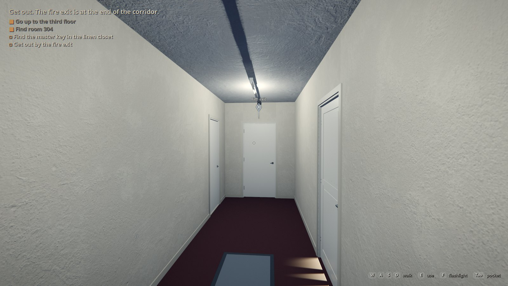
From 304's door: the fire exit's marker down the corridor, the HUD's keys at the foot.
25Money and a laptop
Money: add a Node3DCash to Things on 304's desk with
starter/pickup.gd: Item empty, Cash 20, Label "$20.00", and a thin green
BoxMesh under it (0.155 × 0.004 × 0.066). E on it and the Story's Cash is 20.
The laptop: drag addons/horrorstudio_devices/laptop/laptop.tscn into Things, on the
north half of 304's desk, turned −90° so its screen faces the room. E on it and the view goes in close to its
screen. The mouse works its green terminal; Esc or E brings you back. Set its User to
"room 304" and its Clock to 03:13.
Its shop sells what a catalog lists. The plugin has six things of its own. Make the game's own as files:
In the FileSystem dock make a folder shop/items. Right-click it, Create New >
Resource… > HSShopItem, three times:
File
Fields
shotgun.tres
Id shotgun, Title "Double barrel", About "A double-barrel shotgun, second hand.
Both barrels clean. No questions asked.", Price 12, Category DEFENCE, Modeladdons/horrorstudio_weapons/models/shotgun_double.glb, Max Per Order 1; For sale: Needsknocked_304, Locked Text "NOT YET.
WAIT FOR THE KNOCK."; In the hands: Gun on; Tick gun
shells.tres
Id shells, Title "Buckshot, box of 5", Price 4, DEFENCE, Modelmodels/shells_box_5.glb (the weapons plugin's), Model Turn (25, 0, 0); Needsknocked_304;
In the hands: Shells 5
explosive.tres
Id explosive, Title "Explosive shells, 2", About "Two shells that burst where
they land. Not for indoors.", Price 4, DEFENCE, Modelmodels/shells_box_5_explosive.glb; Needstask:gun, Locked Text "GET THE GUN FIRST."; In the hands: Shells 2, Shelladdons/horrorstudio_weapons/shells/explosive.tres
Make shop/hotel_shop.tres, an HSShopCatalog: Store NIGHT-MART, Items the plugin's six
(addons/horrorstudio_devices/shop/items/: batteries, candle, painkillers, water, soda, burger), and
Folderres://shop/items. Every item saved in that folder is for sale too: to add a thing later,
save a new file there.
Set the laptop's Catalog to hotel_shop.tres.
On Events/DeskKnock, add a task to Add Tasks: gun: Something to defend yourself with (the
laptop on the desk).
The Order tab shows a page per category, < PREV 1 2 [3] NEXT >, with each thing's own model on its
card. A thing whose Needs don't hold yet is a ?: no model, no name, LOCKED, and its Locked Text when
picked. The shotgun and the shells open once the knocks have come (the desk cue's fact). The explosive shells open once
the gun is in your hands (its Tick). A thing just unlocked says NEW. What's bought is paid from the Story's Cash: the gun
and a box of shells come to $16, and the explosive shells take the last $4.
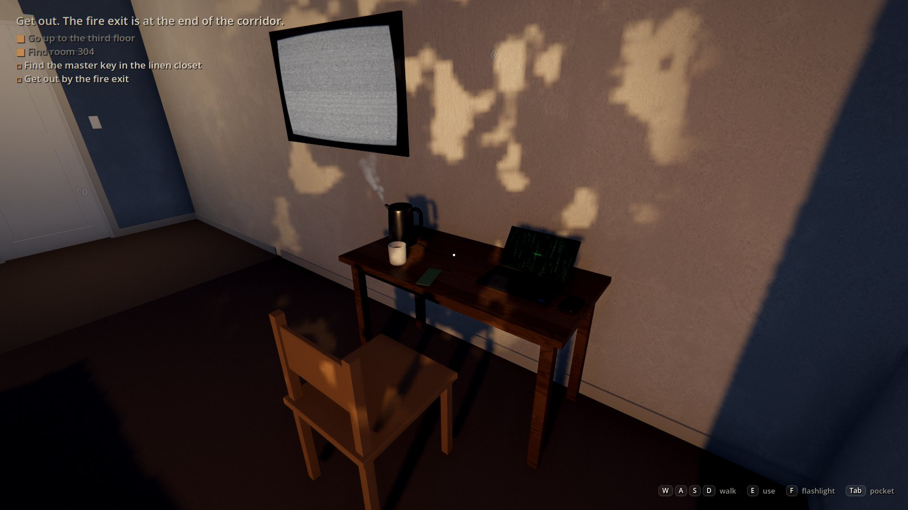
The laptop on 304's desk, the $20 note, the kettle and the mug of tea.
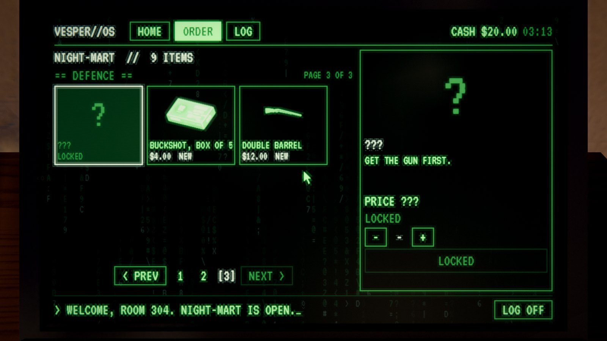
DEFENCE, page 3 of 3: the explosive shells a ? until the gun's come.
26A parcel at the door
Bought things can come in a parcel instead of straight into the pocket. Add a Marker3DDoorstep to Things on the corridor's floor beside 304's door (0.65 m west of it, 0.55 m
out), turned 180° so its −Z points at the door, where you'll come from. On the laptop's Delivery group:
Deliver To../Doorstep, Deliver Place "304's door"
where it's left, and what the terminal calls the place
Delivery Secs 6
how long it takes
When Unseen on, Knock on
left only while you can't see the place, with a knock
Mark Parcels on
a quest marker over each one until it's opened
Each order is its own parcel, left side by side. E on one: the tape tears, the box is gone in a puff, and each thing in
it comes out of the puff at its own size and is pulled into you. Nothing is ever fitted into the box, so a shotgun can
come out of a shoebox.
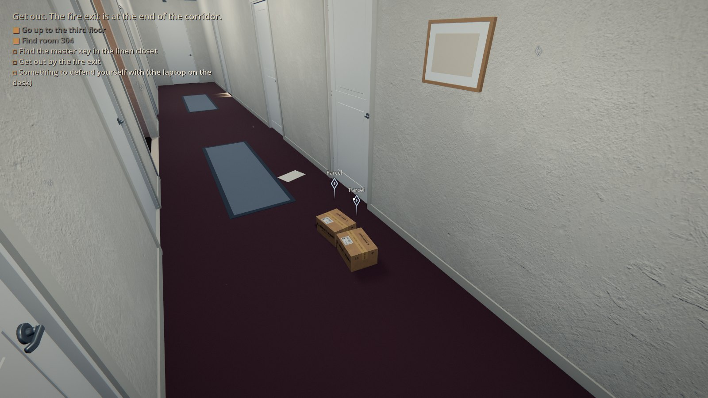
Two orders, two parcels, a marker over each.
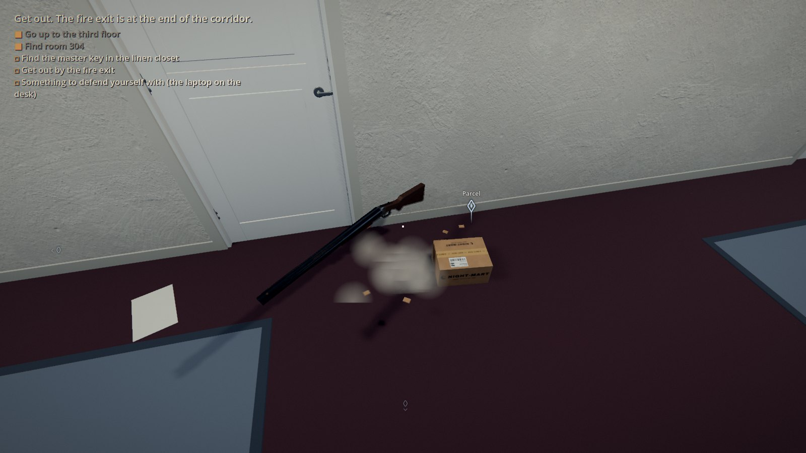
E: the box gone, the double out of it at its own size.
27The shotgun
The gun has to be under your eye before a parcel (or the plugin's pickup) can give it to you. With
Player's Editable Children on, add a Node3DShotgun under
Player/Eye and drag addons/horrorstudio_weapons/double.gd onto it (HSDoubleBarrel):
Owned off
not yours yet: hidden, deaf to the mouse
Spare 0
no shells in your pocket yet (it comes with its two barrels loaded)
Light../Flashlight
the flashlight carried under its barrels while it's up
The shop's shotgun has Gun on, so it goes to that gun, not the pocket, and the gun is drawn up into view. The
shells' Shells go into the gun's own pocket (its marks low on the right), and their kind is the item's
Shell. Its Tick ticks the task gun, which opens the explosive shells.
left click
the right barrel, then the left
right button
held to the eye
R
reload: broken open, the hulls flicked out, a shell into each empty chamber
T
the kind of shell R loads next: buckshot, explosive
Q
lower it, raise it
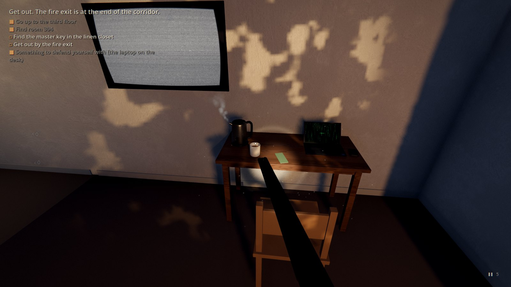
Yours: the double in 304, the tea things ahead.
28Things that break, things that glow
The kettle and the mug are the weapons plugin's own made props (models/electric_kettle.glb,
models/mug_stoneware.glb). Put them on the desk's south end, by the TV.
Kettle/FX
a Node3D with addons/horrorstudio_look/nodes/prop_fx.gd (HSPropFX):
the effects the prop generator gave it, each a switch. Its LED glows; turn Steam on and its spout steams.
Kettle/BlowUp
a Node3D with addons/horrorstudio_weapons/blowup/blow_up.gd (HSBlowUp):
it's cut into its own pieces as it loads. Shot hard enough it breaks into them, small ones near the hit, its own
materials on every piece, its kind (metal, ceramic...) guessed. A weak shot only dents it.
Mug
Editable Children on. Under its mug_stoneware_liquid a NodeTea with
nodes/liquid_fill.gd (HSLiquidFill): the tea stays level and sloshes. A BlowUp too: broken,
its tea is a pool.
Candle
the shop's own model, addons/horrorstudio_devices/shop/models/candle_votive.glb, on the bath's
floor past the blood, with an FX (HSPropFX): its flame and a flickering light. Someone left it burning.
A bulb to shoot out: in Zones/Entry304, swap the Light for a
Node3DBulb 0.25 m under the ceiling: a small glowing sphere mesh, a
StaticBody3D with a 7 cm sphere, the OmniLight3DLight
under it, and a NodeShootable with addons/horrorstudio_weapons/shootable.gd
(HSShootable): Lights Out on, Say "The bulb bursts. Dark." One shot and the entry's dark.
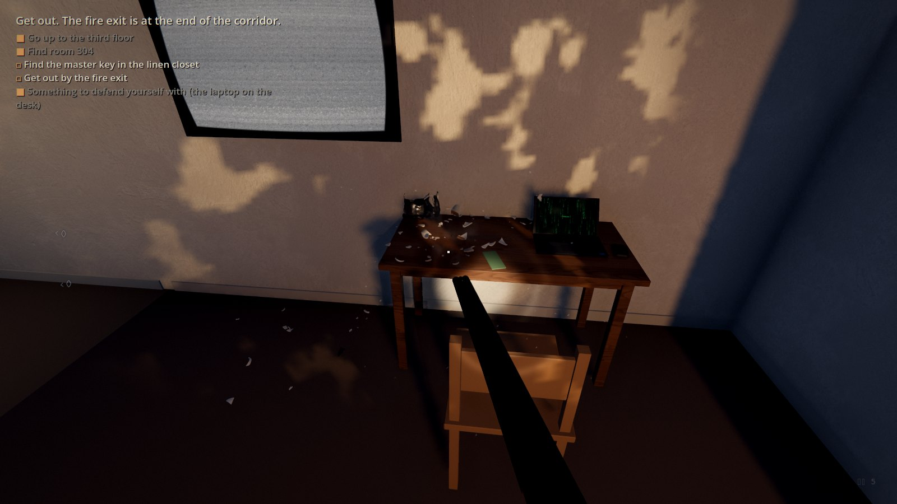
Both barrels: the kettle and the mug in pieces.
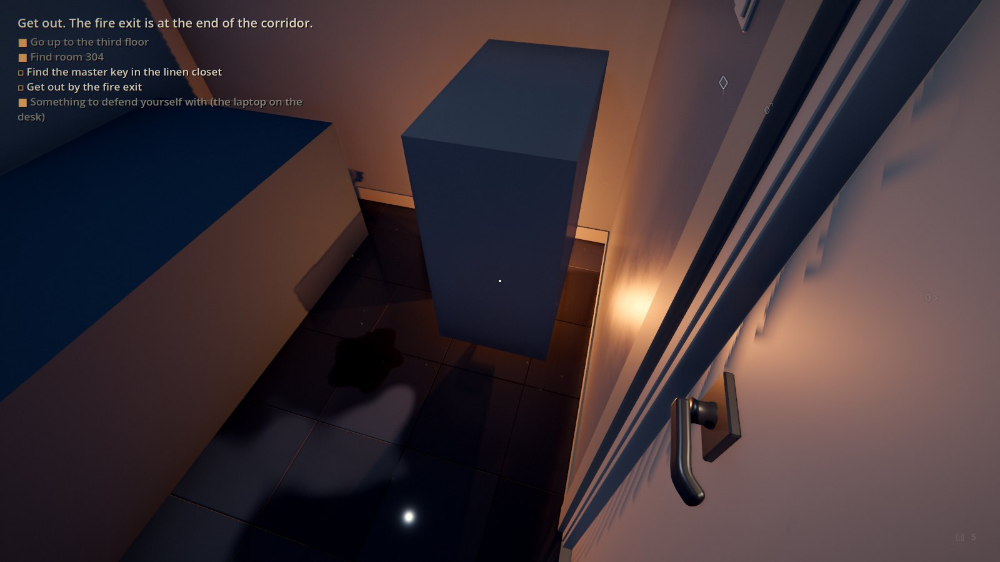
The candle's flame and its light (HSPropFX).
29Shooting her
The one who hunts can be shot. Add a Node3DHitReact under
Events/Hunter with addons/horrorstudio_weapons/react/hit_react.gd (HSHitReact). It puts
hitboxes on her bones (a capsule round a stand-in) on a layer of their own that only shots see. While she's hidden
they stop nothing. Shot, she flinches and staggers, with no blood: black ichor and dark smoke. At Health 12
(a pellet does 1, the head twice that) she's down: she chars, crumbles into the smoke, leaves a pool where she stood,
and her Searcher and Chase stop.
Its Target: add an Area3DShotDown to Events with
starter/event_area.gd and no room (it's only fired): Say "Whatever she was, she's smoke now.",
Factshot_her, Musicuneasy.
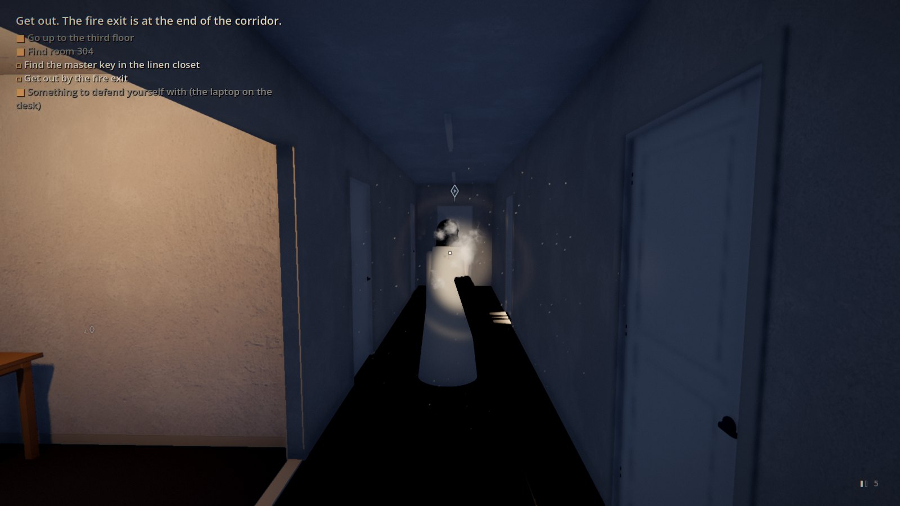
The right barrel: black ichor, and smoke out of the wound.
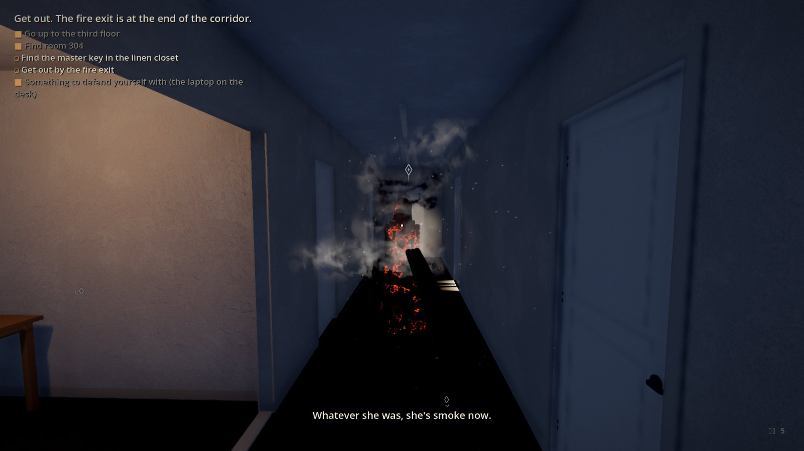
The left: down, charring into the smoke.
30Her looks: other eyes, another skin, the cloak
She can change while the game runs. Her eyes can go black, or light up in the dark. Her skin can turn to chrome,
stone or slime. She can be invisible. A look is one skin and one pair of eyes, and default is always
there: her own skin and eyes, exactly as she was made. You try looks in a viewer, save the ones you like as files,
and a quest or an event turns her to them.
This needs a Character Studio character. The eye looks are drawn by the Studio's eye, and the
stand-in in this guide's other pictures has no eyes (the skins still work on meshes named skin, body or head). The
pictures in this section use the Character Studio's grey alien (Body → Monster mode → Grey alien, then
Export for Godot).
Try them: the look viewer
In Godot: Project → Tools → HorrorStudio: look viewer. (Or open
addons/horrorstudio_look/tools/look_viewer.tscn and press F6.) It's a scene that runs by
itself: your character, and a panel to change her.
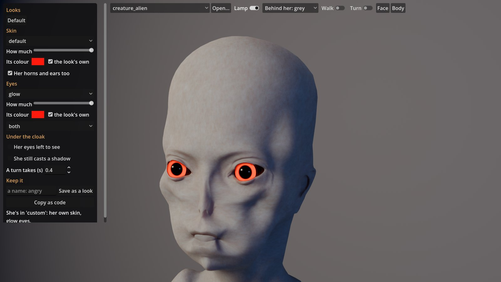
The look viewer. Skin: default. Eyes: glow.
the list at the top
every character in exports/characters/; Open… for a .glb anywhere. With none, a stand-in.
Skin
default (her own), then chrome, mirror, pearl, greasy, slime, oil, porcelain, ember, stone, scales, wax, and cloak (invisible)
click the swatch for your own colour (a glow in green, hearts in blue); tick the look's own to go back
both, L, R
one eye only
Default
her own skin and eyes back
Lamp
off, to see what glows by itself
Behind her
dark, grey or stripes. Pick stripes for the cloak: it shows what's behind her, bent, so it needs something there.
Walk, Turn
the cloak is nearly gone when she stands still and ripples when she moves
Face, Body
the camera on her face or on all of her; drag to look round her, the wheel to come closer
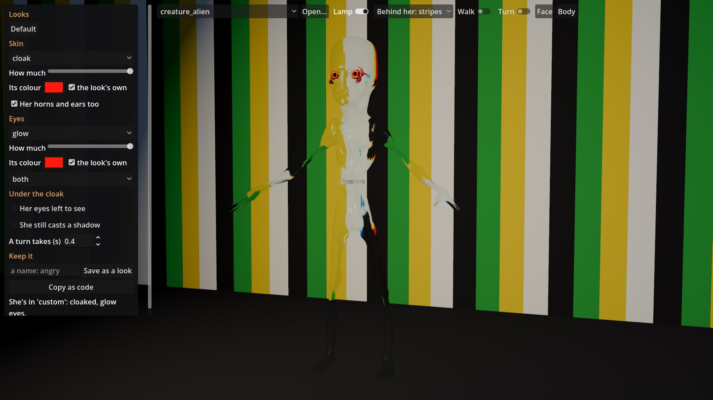
Skin: cloak, Eyes: glow, stripes behind her. Under the cloak her eyes are left to see when the look has eyes of its own.
Now save the two looks this game uses:
Eyes → black. Under Keep it type empty and press Save as a look. It
writes looks/empty.tres in your project.
Press Default. Eyes → glow (red is its own colour). Type hunting,
Save as a look: looks/hunting.tres.
Close the viewer.
Put them on her: the switch
Select Her, Add Child Node, HSLookSwitch, and call it
Looks. In the Inspector open Looks, add an element, and drag looks/empty.tres from the
FileSystem into it. That's all a switch is: her looks, by name. Leave her Look node's own
Creature skin and Creepy eyes on none: those are for a character with one look.
A quest or a fact changes her
Click looks/empty.tres in the FileSystem. In the Inspector, under When, set Needs to
knocked_304: the fact the three knocks set in §23. From then on her eyes are black.
You wrote no script: she wears a look while its Needs hold.
task:dinner
that task on the to-do list is done
on:dinner
that task is on the list and not done yet
item:key_304
you're carrying it
knocked_304
a fact that's been set (an event area's or a cue's Fact)
!shot_her
not that
task:dinner, !shot_her
all of them
When several looks' Needs hold, the last one in the list wins. When none does, she's in her Start look
(empty: her default).
An event changes her
The one who hunts should come with her eyes lit. Give Events/Hunter an
HSLookSwitch called Looks too, with looks/hunting.tres in its
Looks, and set its On Fire to hunting. Then select LightsOut and, in the
Node tab, connect its scared signal to Events/Hunter/Looks →
fire. When the corridor goes dark, two red points come down it.
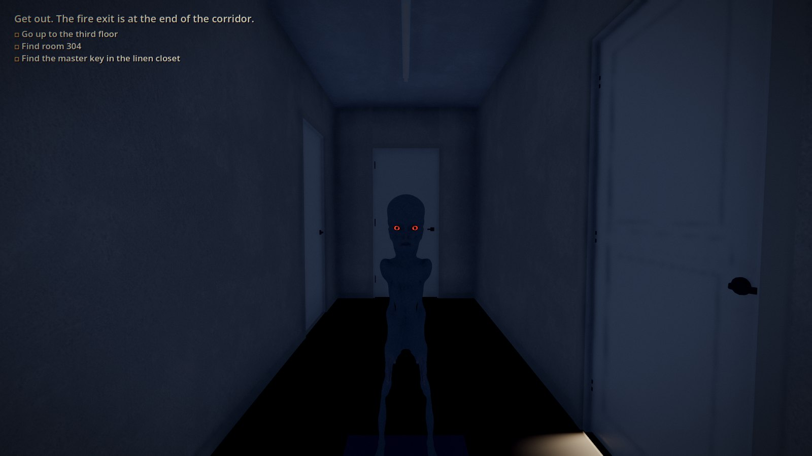
After the lights go out: the one who hunts, in hunting.
Three ways an event can do it:
a signal wired to the switch's fire, as here. On Fire says which look: a name,
default, or next (through her looks in turn);
an event area or a cue: both have Look Of (drag her, or her switch, in) and Her Look (a
look's name, or default);
a Target: a cue's, a shootable's or a hit react's Target can be the switch itself.
A look turns over a moment: the old one fades out, the new one fades in. The switch's Seconds says how
long (0.6); a look's own Seconds overrides it. The cloak turns in crackling patches.
By hand while you play
Press F8 in the running game. The same panel comes up for every character that has a switch: her
named looks as buttons with Default first, and both lists to try anything else on the spot.
Save as a look works here too. F8 again closes it. (Debug builds only: it's gone
from the game you ship.)
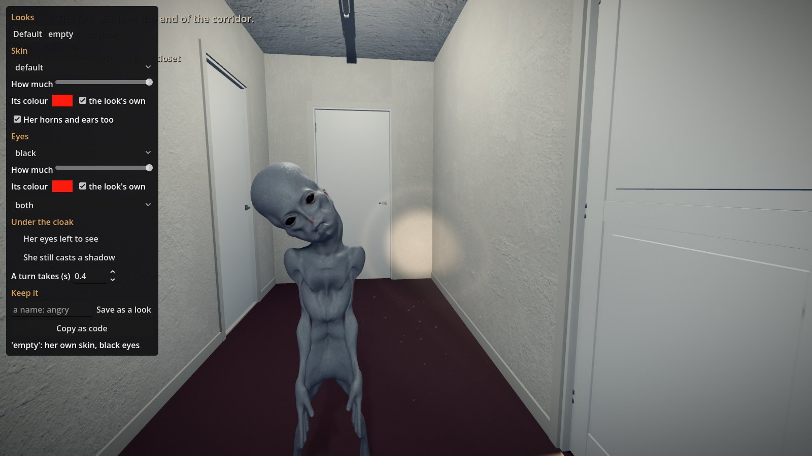
F8 in the game: her in empty.
From a script
$Her/Looks.set_look("empty") # by name
$Her/Looks.default() # her own skin and eyes
$Her/Looks.show({"skin": "cloak", "eyes": "glow", "eye_color": Color.GREEN}, 0.4) # a look made on the spot
$Her/Looks.look_changed.connect(func(look): print("she's in ", look))
Good to know. The cloak draws what's behind her, so see-through things behind her (a
flashlight's beam in the fog, smoke, rain on glass) are missing inside her outline: in fog she shows as a hole.
Cloaked, she casts no shadow unless the look's Shadow is ticked (nobody there, and a shadow on the wall). The
glowing looks have light of their own; the others are as dark as the room. Every look and its numbers:
the Look plugin's guide.
31The hunt: something in the corridor
You've ordered the gun. It will be left at 304's door. Until it's in your hands, something else is out in the
corridor, and it knows you're waiting. This is a hunt: one node that picks who hunts you, how, what starts it
and what ends it. It's a hidden quest: nothing on the to-do list tells you it has begun.
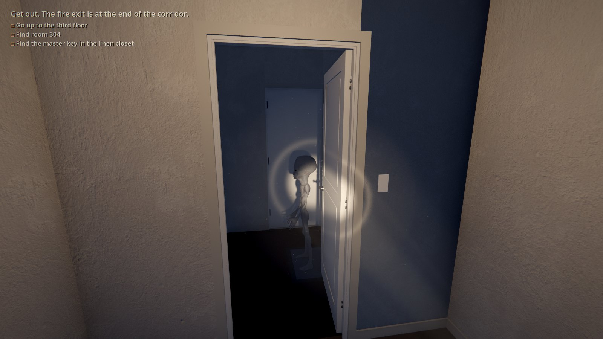
From 304's entry, looking out of its open door: she runs past, east to west, and is gone. The hunt only plays this while you're in 304 looking at the doorway. (Here she's the Character Studio's grey alien, caught mid-way; with no clips yet she slides: her moves, below.)
She doesn't run at you. She's seen at the stair end and gone when you look; she runs past your door; a door opens
by itself; there's a knock where she isn't; she's behind you, nearer each time you look away. She rushes only
if you're in the dark (your flashlight off or dead, no lamp near you) once the hunt has been going a minute, and
before she does, you're warned: a breath, your flashlight dips, her eyes light. Room 304 is safe.
1. Who hunts
Duplicate Her (Ctrl+D), drag the copy under Events and name it Stalker. Untick its eye in the
Scene dock: hidden. Delete its LightShy, Presence, Menace and Uncanny children: the hunt moves this one.
Under Stalker add a Node, name it Moves, and give it res://starter/moves.gd. Leave its rows
empty for now (her moves, below): with no clips she slides, as the one who searches
does.
Under Stalker add an HSLookSwitch named Looks with looks/hunting.tres
in its Looks (§30). The hunt turns her to it for the warning.
2. The hunt
Under Events add a Node, name it Hunt, give it res://starter/hunt.gd:
Hunter
Stalker
Kind
stalking. The three: haunting (she never touches you: get close and the lights blink, she's elsewhere), stalking (she can rush you; caught is a fright), lethal (caught, you die and come back at the last checkpoint)
Ends When
task:gun: over once the gun's task is ticked. Also there: Survive Secs (a time), Safe Ends (reaching a safe room), and her being shot down ends any hunt
Reveal Task
hunted: Something is out in the corridor. Shown the first time you see her (Reveal At); leave it empty for a hunt that's never named
Start Says, End Says
a line when it starts and when it's survived
Fact
armed: set when it's survived. While it runs hunt:Hunt is set, and hunt:Hunt:2, hunt:Hunt:3 once those stages have come: any Needs can read them
Stages, Stage Secs
3, and 25, 35: stage 2 after 25 s, stage 3 after 35 more. Spots belong to stages; the rush waits for Rush Stage (3)
Gap Min, Gap Max
6 and 14: seconds between the things she does (shorter in later stages)
Rush Dark
on: she comes when you've been in the dark 3 s. The other rules: Rush Ran, Rush Stared, Rush Back; all off: she never comes
Tell Look
hunting: her look for the warning and the rush. Tell Secs 1.4: how long the warning is
Safe Rooms
r304, r304_entry, r304_bath: she won't follow you in, and won't start a rush while you're there
Start it from the laptop: select Things/Laptop, Node dock, Signals, ordered, connect it to
Events/Hunt, method start. (A hunt can also start by itself: its Needs, in the Story's
words.)
3. Hunt spots: where she can do something
Under Events add a Node3D named HuntSpots. Each spot is a Marker3D with
res://starter/hunt_spot.gd, put where she'll be, its Hunt set to Events/Hunt. The hunt plays the
ones that are possible at that moment, never the same twice running.
PastTheDoor
Kind dart. In the corridor 3 m east of 304's door. A Marker3D child To 6.4 m west of it (the other side of the door); set the spot's To to it. An Area3D child with a box over room 304 and its entry: it only plays while you're in there. Near M 1, Far M 9, Speed 6.5. It needs the doorway's middle in your view and her start out of it, so with 304's door shut it never plays
StairEnd
Kind watch, by the stair door, facing down the corridor. Near M 5. She's put there only while you can't see the spot; look at her for Stare (0.8 s) and she's gone in a blink of Blink Lamp (Tube1)
VendingCorner
Kind peek, at the edge of the vending corner, turned so its red arrow (X) points out into the corridor: she draws back the other way. Stage Min 2
LinenDoor
Kind door, Door the linen closet's door, Sound latch, Once. It opens by itself when you're not beside it
Knock302
Kind decoy, behind 302's door, Sound knock_three: a knock where she isn't
BehindYou
Kind follow, anywhere in the corridor, Stage Min 2: she's 7 m back down the way you came, a step nearer each time you look away, never nearer than 2.2 m; watched, she goes
The other kinds: wait (as watch, her back to you: by the thing you need), ambush (in its box,
a jump scare; with Catches a real catch), pass (cloaked, she walks to To: needs an HSCloak
under her and the hunt's Cloaked), custom (your animation and a Target's fire()). Every spot
has Stage Min/Max, Needs, Once, Cooldown, Weight, a Sound and how much of a
Scare it is.
4. Her moves: clips from Kimodo
Each thing she does has a move, and Moves (moves.gd) holds a clip for each. Make the clips in the
Kimodo demo, save each .npz, and drop them into the project's animations/ folder. In Moves' Inspector,
pick the file for each row. When the game starts each one is put onto her skeleton (a Character Studio
character, a Mixamo or humanoid model), so one .npz serves every character. A stand-in has no skeleton: it slides.
Idle
standing still, breathing, a little wrong. Looped
Walk, Run
made in place and looped; played faster or slower by how fast she's really going, so her feet don't skate. Run is the dart and the rush
Stalk
coming slowly: low, creeping. A cloaked pass uses it. Without one she walks
Watch
stood watching you: the watch and follow spots. Without one, Idle
Peek
leaning out round a corner
Lunge, Kill
the ambush; what she does when she has you
Kimodo prompts to start from (ANIMATION, KIMODO): "a person stands still, head tilted, arms hanging" (idle,
watch), "a person walks slowly forward, hunched, arms limp" (stalk), "a person sprints forward" (run, tick In place
and Loop), "a person leans sideways to look round a corner, then pulls back" (peek), "a person lunges forward with
both arms reaching" (lunge). A spot can name a move of its own (Move), or one of her model's animations by
name (Animation). More on the Moves node takes any other names you invent.
5. Dying, if you want it
This tutorial's hunt is stalking: caught, she's in your face and gone. For one that kills, set Kind to
lethal. The Story keeps a checkpoint when a lethal hunt starts, and you can put more: an Area3D
with res://starter/checkpoint.gd in a doorway. Caught, the screen goes black with the hunt's Death
Title, and you're back at the checkpoint with the tasks, facts, pocket and doors as they were; the hunt goes on
one stage lower, with no rush for Grace seconds. After Mercy After deaths (2) her warning is longer.
What saves you is always the same: light, a safe room, a door shut in her way (2 s), 6 s out of her sight, hiding
before the warning ends, or shooting her.
6. Sanity
One node. Under Main add a Node, name it Sanity, give it res://starter/sanity.gd. A thin
meter shows at the top right while it isn't full. In this night's game set:
Scare Cost
0.03 (this night has a lot of scares; the default is 0.06)
Foods
{"soda": 0.12, "water": 0.06, "burger": 0.3}: the laptop's FOOD & DRINK page. Once one's in your pocket, C eats it
No Sleep
one line: !shot_her. While she hasn't been shot, lying in 304's bed only rests you
Cant Says
You can't sleep. Not while she's out there.
Slept Says
You slept. It's nearly light.
Play: the dark corridor wears it down, the desk chair and the bed bring it back part of the way, a soda a little
more. Lie in 304's bed before the end and you're told you can't sleep. Shoot her, lie down again, and after four
seconds the night is over: dark, then awake with it full. How it works in general:
What wears it down
the dark (your flashlight off, no lamp near), her near you in the open, a hunt running, every scare. Each has its own number; Drain is time itself
What mends it
sitting (to 0.7), lying down (to 0.8), food, and sleep (to full). Food is a thing with res://starter/food.gd eaten with E, or a pocket thing listed in Foods ({"soda": 0.1}: the laptop's shop sells those) eaten with C
Sleep
lie on a bed (a seat with pose lying) for Sleep After seconds: dark, then awake with it mended. No Sleep is a list of the Story's words; while any holds you can't (on:find304: while that task is on your list). A running hunt stops it too. Sleep Needs is what must hold (night)
At nothing
Zero Target's fire(), or Zero Dies: back at the checkpoint with half of it
To make the night harder as it falls: a hunt and the night's director speed up by themselves (their
Sanity Sync: spots and moments closer together, stages sooner, a shorter warning; under a quarter she rushes a
stage early). And three facts are set for anything's Needs: sanity:uneasy (under three quarters),
sanity:shaken (under half), sanity:breaking (under a quarter). A cue, a scare area, a hunt
spot or a whole hunt with Needs sanity:shaken only happens once you're that far gone.
7. Close calls: she nearly had you
A hunt that's fair by the numbers kills you while you reload. A close call cheats for you, where you can't
see it: when she's about to have you and you're in the middle of something, she falters. She still comes, slower and
slower, lunging, her breath in your ear, and never quite gets there until your reload is done, plus half a second for
your shot. Miss, and she has you.
Under Hunter (the one you shoot at the end) and under Stalker add a Node, name it CloseCall,
give it res://starter/close_call.gd, and untick Hiding on both (this night's search is meant to find
you when you gasp). Her chase finds it by itself.
When
Reloading: your gun is open. Empty Gun: the beat between the click and your reload. While Needs: the Story's words (on:fuse: you're at the fuse box). Hiding: the time her search would have found you, she leans in, stays Linger seconds longer, and goes
How often
Chance 0.75 (less as your sanity falls: its Sanity Sync), the first one in a game sure, one a chase, 40 s between them, and only while its Needs hold
How
she starts to falter Hold M (2.8 m) from you and comes no nearer than Stop M (1.3 m); never longer than Max Secs (4 s), then she has you; her Move while it lasts (lunge) and a Sound at her head
From a script
$CloseCall.call_it("the door", 2.0): the next time she's in reach, two seconds. Its signals began(kind) and ended(kind, made_it) for a line or a sound
Keep it rare. One a chase is a story the player tells afterwards; one every chase is a monster that can't catch
anyone.
A hunt that's only a haunting, ended by a task: Kind haunting, Ends When
task:power, and start it from whatever cuts the power. She's seen, she's near, she never touches you;
flip the breaker and she's gone. Other things can join in by its stage: a scare area with Needs
hunt:Hunt:2.
32The way out
With Hotel's Editable Children on, select hotel_floor/doors/door_corridor_e_door (the fire
door) and drag starter/door.gd onto it. Set its Tick to out. In the
Node tab connect its opened signal to Story → end. Opening the
fire door ends the night: the screen goes black and the ending's title comes up.
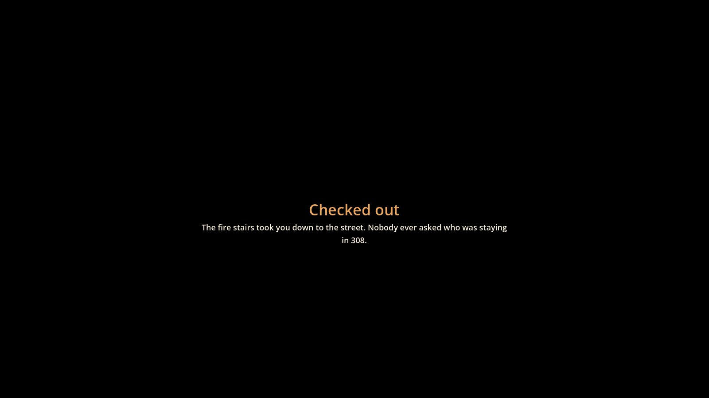
The ending.
33Play it
Press F5.
WASD
walk (up the stairs too), Shift runs
mouse
look
E
open a door, pick a thing up, read a note, sit down, lie down; E again puts the note away or gets you up
F
the flashlight
Tab
the pocket: the things you carry, as themselves, in a row
at the laptop
the mouse on its screen; Esc or E back
the gun
left click fires, right button aims, R reloads, T the kind of shell, Q lowers it
F8
her looks, by hand (debug builds only)
Esc
let the mouse go
Up the stairwell. Open the door at the top. The corridor's tubes sag, then come back.
304 is locked. Read the note on the carpet. Was someone at 308's door just then?
The linen closet is dark: F. Take the key and the corridor goes out behind you, one tube at a time, then comes back.
Open 304 with the key. The TV's on. The music turns to dread. Look at the window, then back at the bath's door. And again. Then wash your face, and stand by the bath's wall with the lamp behind you. Lie on the bed and look up at the ceiling. Sit at the desk and watch the static.
Three knocks. Pick up the $20 by the laptop and look at its shop: something's for sale now. Order the shotgun and a
box of shells, close the laptop and wait. A knock: two parcels at 304's door. Open them. Order the explosive shells
too. Try the gun on the kettle. Shoot out the entry's bulb, if you'd rather the dark.
The flashlight dies. Batteries in the vending corner, where the radio's hissing. Walk back out and listen behind you.
On the way out she's at the end of the corridor, the tubes stuttering round her, her head on one side, her eyes black since the knocks. Walk, and she walks. Your heart picks up as you near her. Shine the light on her and she backs off. Do it twice and the corridor goes dark.
When she hunts you in the dark her eyes are lit: two red points. She can be stopped now: both barrels.
Walk to the fire exit. Don't look under 308's door.
34Every system in it
This night is meant to use every system the studio has made for a game built by hand, so that a missing or broken
one shows up. Here's each one and where it is. python tools/godot/tutorial_v2.py (TUTORIAL2) builds the
game as these steps say and plays all of it.
System
In this game
Scene builder
rooms on two floors, a dog-leg stair, doors locked by a key, windows, furniture, lamps, paint, the export: §3 to §8, or the ready-made floor
Character Studio
her, a Studio export with its skin wet (a stand-in when you have none): §10, §20
Look plugin
the look and the grade, light zones, the tube and dying bulb presets: §11; rain on glass, a car's lights, a CRT, a real mirror, a wet floor, blood, a light shaft, a leak and a puddle, leaves' shadows, the tape: §12; the air, its dust and the beam: §13; lightning, breath and frost, steam writing: §22; made props' effects (HSPropFX) and a liquid's level (HSLiquidFill): §28; her looks (other eyes, creature skins, the cloak), the look viewer, a switch a fact and an event turn: §30
Starter kit (44 scripts)
the player, flashlight, story, pocket and cash, sound and its physics, room tones, footsteps, notes, pickups, doors and locks, event and scare areas, lights: §15 to §21; fear, the steps behind you, her signs, the glimpse, the one closer each time, the mirror figure, the shadow, the feet, the uncanny, the night's director and its moments, her menace, the searcher, the chase, the cold, the steam: §22; cues and seats: §23
Sound shelf and moods
the four moods, a tone for each room, every sound placed and traced through the rooms: §14, §22
UI plugin
HSHud (the reticle, the keys, the pocket as a row of the things themselves), HSQuestMarker coming and going with the to-do list: §24; HSModelSlot in the pocket's row and the shop's cards
Devices plugin
the laptop, its terminal, the Order tab a page per category, things as files in a catalog's folder, locks shown as a ?, NEW: §25; delivery, parcels with a marker each, unboxing into the hands: §26
Weapons plugin
the double barrel from a parcel, its reload, aim and the two kinds of shell: §27; its pellets' holes in the walls, a bulb shot out (HSShootable), the kettle and the mug broken (HSBlowUp): §28; her shot down into black ichor and smoke (HSHitReact, HSOoze): §29
Prop generator
the laptop and its mouse, the parcel, the shotgun, the shells' boxes, the kettle, the mug, the candle and the shop's things are all its made props
Not in it yet: what a game by hand can't do
The studio has these, but they only run in the desk's exports or the Director's projects. The starter kit has no
way to use them yet:
Parts that open
a made prop's lids, doors and drawers (a suitcase, a wardrobe to hide in, a box), things put in and taken out, things shoved and carried: the runtime's parts.gd
A book in the hands
a journal whose pages are written in a hand, turned with the arrows: the runtime's book.gd (here a note is a card)
Faces
expressions from the Face page played on her face: the runtime's face.gd (here only uncanny.gd's smile and stare)
The hunt
a hidden quest from the order to the gun: who hunts, her spots in the corridor, the warning and the rush in the dark, 304 safe; her moves from Kimodo clips (moves.gd: here she slides until you make them): §31
Sanity
worn down by the dark, her and the scares; the desk chair, 304's bed and the shop's food mend it; no sleep until she's shot; the hunt and the director faster as it falls (sanity.gd): §31, 6
Close calls
reloading with her nearly on you, she falters just long enough, once a chase (close_call.gd under both of her): §31, 7
Her moves, edited
an animation library with cards, On stage per quest, paths: the Director's Animate tab. By hand, moves.gd plays a clip per behaviour: §31
The HUD's words
the starter Story draws its objective, list, lines and cards itself, so the HUD's corners, its serif lines and its cards go unused
E's prompt
the reticle doesn't say what E will do ("Take: the master key"). The runtime feeds it, the starter player doesn't.
Pause menu, saves
the HUD's menu (Save, Settings, Quit) is the runtime's, with Standalone off
The peephole, the latch, cleaning, board games, nights as chapters
the runtime's interactables
A street
the hotel has none. Your first game puts its house on a street.
Tell us which of these you missed while building it.
35Where to go next
Another floor: in the scene builder, copy ↑ copies a floor up with everything on it;
export again, and the export's link puts it in your project at once.
The hotel from the street: put the set in a building on a street in the street builder, as your first game does with its house.
Made props: the prop generator's props come with a Godot scene each (Saved/Props/<name>/<name>.tscn):
cans with your own labels, a candle, a kettle. Drop one in and give it pickup.gd or note.gd, an
HSPropFX for what it glows with, an HSBlowUp to break it. A suitcase's lid and a journal's pages don't open in a game by
hand yet (not in it yet).
Her face and her moves: an AnimationPlayer on her blend shapes, or the face clips the studio's Face page makes.
The whole look: the plugin's other nodes and its 80 presets, in its guide.
Quests, conversations, branching endings: what the Director does, in its guide.